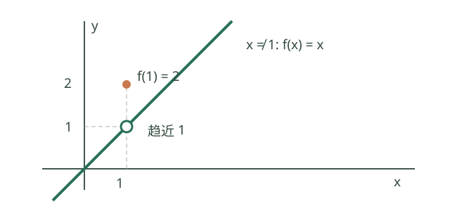
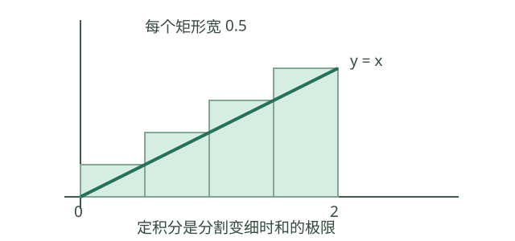

大学高等数学：知识点、公式与定理
整理日期：2026-10-29
主教材：李忠、周建莹《高等数学》上下册。按知识主题组织，不对应某一版的具体页码或章号。
定位：系统学习与复习查阅，覆盖常见大学高数核心及部分扩展内容；不代替教材中的证明、例题与练习，也不等同于某年度考试大纲。
配套：学习计划 · 初高中基础专题
1. 全局框架与阅读方法
高数主要研究四个问题：
| 问题 | 工具 | 直观含义 |
|---|---|---|
| 无限接近时发生什么？ | 极限、连续 | 给变化过程一个精确的终点描述 |
| 此刻变化多快？ | 导数、微分 | 用局部线性关系近似变化 |
| 微小贡献累计多少？ | 积分 | 将连续分布的贡献累加 |
| 变化规律如何决定整体行为？ | 微分方程、级数 | 从局部规律或简单项重建函数 |
学习顺序：极限与连续 → 一元微分 → 一元积分 → 多元微分与重积分；微分方程、级数可在一元积分后学习；曲线曲面积分需要空间几何与多元微积分基础。
优先级：A 必须扎实掌握；B 系统掌握；C 按教材和目标范围深化。每个公式都要检查定义域、连续性、可导性以及收敛条件。
本文件主要讨论实数范围；角度均使用弧度。涉及复数、向量值函数等扩展时另作说明。
2. 函数、数列与极限【A】
初学者先理解什么？
极限描述输入越来越接近某个位置时，函数值靠近哪个数；数列极限则观察项的序号越来越大时的趋势。“趋近”不要求中间某一项恰好等于目标值。
例如 \(a_n=1/n\) 依次为 1、1/2、1/3……，虽然每项都大于 0，仍有 \(a_n\to0\)。函数可以在 \(x=1\) 处另行定义为 2，而其他位置取 \(f(x)=x\)：当 \(x\to1\) 时极限为 1，函数值却为 2。函数值、极限是否存在、两者是否相等要分别检查。

跟着算一遍：先化简，再求极限。 当 \(x\ne1\) 时，\((x^2-1)/(x-1)=x+1\)，因此 \(\lim_{x\to1}(x^2-1)/(x-1)=2\)。原式在 \(x=1\) 没有定义，但求极限只需要研究附近允许的点。数列 \(1/n\to0\) 的严格含义是：无论给定多小的 \(\varepsilon>0\)，选正整数 \(N>1/\varepsilon\)，以后所有 \(n\ge N\) 都有 \(|1/n|<\varepsilon\)。
2.1 基本概念
- 函数：定义域、值域、复合、反函数、分段函数；有界、单调、奇偶与周期性。
- 数列是以正整数为自变量的函数；有界与收敛不同，收敛必有界，有界未必收敛。
- 单侧极限、双侧极限、无穷远处的极限；当定义域在该点两侧均有点任意接近时，双侧极限存在当且仅当左右极限存在且相等。
- 无穷小是极限为零的变量，不是固定的“极小实数”；无穷大不是实数，不能直接按普通数运算。
2.2 极限的精确定义
数列收敛：\(a_n\to A\) 指对任意 \(\varepsilon>0\)，存在正整数 N，使 n>N 时都有
\[ |a_n-A|<\varepsilon. \]
函数极限：要求 a 是定义域的聚点，即任意去心邻域内都有定义域中的点。\(\lim_{x\to a}f(x)=L\) 指对任意 \(\varepsilon>0\)，存在 \(\delta>0\)，使定义域内满足 \(0<|x-a|<\delta\) 的 x 都有
\[ |f(x)-L|<\varepsilon. \]
理解重点：要求“足够接近以后全部满足”，不是挑选一些接近的点。
聚点条件不可省：如果 a 是定义域中的孤立点，充分小的去心邻域没有可检验的 x，上述条件会对任意 L 空真，不能据此断言极限唯一。讨论双侧极限时，两侧都应有定义域中的点任意接近 a；否则应明确采用相对定义域的单侧极限。
2.3 核心定理
| 定理 | 内容与条件 |
|---|---|
| 唯一性 | 极限存在时唯一 |
| 四则运算法则 | 两函数分别趋于有限值 A、B，则和差积趋于相应结果；商要求 B≠0 |
| 局部有界性 | 有限极限存在，则在该点某个去心邻域内有界 |
| 保号性 | 极限 L>0，则充分接近时函数值>0；L<0 同理 |
| 夹挤定理 | g≤f≤h，且 g、h 趋于同一有限值 L，则 f→L |
| 单调有界定理 | 单调且有界的实数数列必收敛 |
| 柯西收敛准则 | 实数数列收敛，当且仅当其足够靠后的任意两项之差可任意小 |
这些结论的证明。 唯一性：若两个极限 A、B 不等，取 \(\varepsilon=|A-B|/3\)，同一个充分靠后的项或充分靠近聚点的定义域点必须同时距离 A、B 小于 ε，与三角不等式矛盾。局部有界性取 ε=1 得 \(|f|\le |L|+1\)；保号性对 L>0 取 ε=L/2。夹挤定理中两端最终都落入 \((L-\varepsilon,L+\varepsilon)\)，中间项亦如此。
四则法则：差的绝对值受各项误差之和控制；乘积写为 \(fg-AB=f(g-B)+B(f-A)\)，用 f 的局部有界性控制第一项。若 B≠0，保号性给出充分靠近时 \(|g|\ge |B|/2\)，于是 \(|1/g-1/B|\le2|g-B|/|B|^2\)，再用乘积法则处理商。对数列，以上论证把“足够靠近”换成“充分靠后”即可。
单调有界定理：递增有上界时令 \(s=\sup\{a_n\}\)。任意 ε>0，由上确界定义存在 N 使 \(a_N>s-\varepsilon\)，此后 \(s-\varepsilon<a_n\le s\)，因此收敛到 s；递减情况对 \(-a_n\) 使用同一证明。这一步使用实数的上确界完备性。柯西准则的必要性由 \(|a_m-a_n|\le|a_m-A|+|a_n-A|\) 得到；充分性先令 ε=1 得尾部有界，连同有限个前项使整个数列有界。从有界区间反复二分、选择包含无穷多项的半区间，可构造趋于某个 A 的子列；嵌套区间有唯一公共点依赖实数完备性。再用柯西性质令全部充分靠后的项接近该子列中足够靠后的项，便得整个数列趋于 A。
2.4 常用极限与等价无穷小
\[ \lim_{x\to0}\frac{\sin x}{x}=1,\quad \lim_{x\to0}\frac{e^x-1}{x}=1,\quad \lim_{x\to0}\frac{\ln(1+x)}x=1, \] \[ \lim_{x\to0}(1+x)^{1/x}=e,\qquad \lim_{n\to\infty}\left(1+\frac1n\right)^n=e. \]
当 x→0：
\[ \sin x\sim x,\quad\tan x\sim x,\quad\arcsin x\sim x,\quad\arctan x\sim x, \] \[ 1-\cos x\sim\frac{x^2}{2},\quad e^x-1\sim x,\quad \ln(1+x)\sim x,\quad (1+x)^\alpha-1\sim\alpha x\quad(\alpha\neq0\text{ 为常数}). \]
\(f\sim g\) 表示 f/g→1。等价替换适合乘除结构，不能在可能发生抵消的加减项中盲目替换。例如求 sin x−x 的高阶变化时，不能直接把 sin x 换成 x。
常用方法：直接代入 → 因式分解、通分、有理化 → 重要极限与等价替换 → 夹挤 → 符合条件的洛必达法则 → 泰勒展开。
常用极限与等价无穷小的核验。 正弦与指数基本极限的独立推导见“基本求导公式逐项核验”。由连续性 \(\cos x\to1\)，所以 \(\tan x/x=(\sin x/x)/\cos x\to1\)。令 \(t=\arcsin x\to0\)，则 \(\arcsin x/x=t/\sin t\to1\)；令 \(t=\arctan x\to0\)，同理 \(t/\tan t\to1\)。半角公式给出 \((1-\cos x)/(x^2/2)=[\sin(x/2)/(x/2)]^2\to1\)。
令 \(u=\ln(1+x)\to0\)，则 \(x=e^u-1\)，所以 \(\ln(1+x)/x=u/(e^u-1)\to1\)。对固定 \(\alpha\ne0\)，写 \((1+x)^\alpha=e^{\alpha\ln(1+x)}\)，把 \([(1+x)^\alpha-1]/(\alpha x)\) 拆成 \((e^u-1)/u\) 与 \(\ln(1+x)/x\)，其中 \(u=\alpha\ln(1+x)\)，两因子均趋于 1。又 \(\ln[(1+x)^{1/x}]=\ln(1+x)/x\to1\)，由指数函数连续性得极限 \(e\)；令 \(x=1/n\) 得数列形式。上述对数表达式要求 \(x\) 足够接近 0，使 \(1+x>0\)。
实际问题、推导与历史：瞬时变化的极限
一辆车在时刻 \(t\) 的位移是 \(s(t)=t^2\)。第 \(t\) 秒后的 \(h\) 秒内平均速度为 \(((t+h)^2-t^2)/h=2t+h\)；当 \(h\to0\)，极限为 \(2t\)，这才给出瞬时速度。必须先令 \(h\ne0\)，再取极限。
夹挤定理怎么用： \(-x^2\le x^2\sin(1/x)\le x^2\)（\(x\ne0\)），两侧均趋于0，所以中间也趋于0。夹挤用于难以直接计算但能找到上下界的情况。
历史： 极限思想经历了很长的发展：古希腊数学中的穷竭法以逐步逼近处理面积问题；后来微积分形成后，极限与收敛又逐步被严格化。圣安德鲁斯大学数学史
指数对数、增长与二分法
指数从整数次幂经正根、分数指数推广到实指数，保持指数运算律；当 \(a>0\) 时定义 \(a^x\)，且 \(a^{x+y}=a^xa^y\)。对数是指数运算的逆运算：\(\log_a x=y\iff a^y=x\)，条件 \(a>0,a\ne1,x>0\)。运算式如 \(\log_a(xy)=\log_a x+\log_a y\) 源于 \(a^{u+v}=a^ua^v\)。指数增长模型 \(N(t)=N_0a^t\) 可描述复利、细菌繁殖或放射性衰减；取对数可把乘方中的未知指数转成可解变量。指数、幂函数、对数函数增长速度不同；比较增长时可看比值或取对数，不能仅凭有限几个点判断长期趋势。
若连续函数 \(f\) 在 \([a,b]\) 上满足 \(f(a)f(b)<0\)，介值定理保证区间内至少有零点。二分法不断取中点并保留变号子区间；第 \(n\) 次后区间长度为 \((b-a)/2^n\)，故中点近似误差不超过该长度的一半。此法用于无法写出精确根的方程数值求解；端点变号保证至少存在零点，但不保证唯一。一般连续函数的零点不一定能用多项式根的重数描述，而没有变号也可能有零点，例如 \(f(x)=x^2\) 在 0 处的零点。
频率、概率与随机模拟
在重复条件稳定的独立试验中，事件频率会随次数增加而趋近其概率（大数定律的直观表达）；有限次数的频率仍有随机波动。随机模拟用计算机生成符合模型的样本，估计复杂事件概率或分布，例如重复掷骰并统计和大于阈值的比例。模拟结果是近似值，误差通常随试验次数增加而下降，不能替代可行的精确计数或证明。
有限等可能样本空间中 \(P(A)=|A|/|\Omega|\)。先定义样本空间和事件，再判断结果是否等可能；不等可能时直接数结果会错。独立事件满足 \(P(A\cap B)=P(A)P(B)\)，而互斥是交集为空。若事件都具有正概率，互斥事件不可能独立。
正态分布、相关和回归模型
正态曲线以 \(\mu\) 为中心、\(\sigma\) 控制宽窄；标准化 \(Z=(X-\mu)/\sigma\) 将变量转成标准正态刻度。约 68%、95%、99.7% 分别落在均值左右 1、2、3 个标准差内是经验近似，适用于正态模型而非任意数据。相关系数在 −1 到 1 之间，只度量线性关联；非线性关系可能相关系数接近零，离群点也会显著改变它。
简单线性回归以残差平方和最小确定直线。令 \(\hat y=a+bx\)，对 \(\sum_i(y_i-a-bx_i)^2\) 分别对 \(a,b\) 求最小，得到 \[ b=\frac{\sum_i(x_i-\bar x)(y_i-\bar y)}{\sum_i(x_i-\bar x)^2},\qquad a=\bar y-b\bar x. \] 上式要求 \(\sum_i(x_i-\bar x)^2>0\)，即样本的横坐标不全相同，否则斜率不能由此公式确定。斜率描述样本范围内的线性趋势，外推到观测范围外风险大。相关和回归不能单独证明因果，因果判断还需实验设计或控制混杂因素。
列联表记录两个分类变量的联合频数。在独立假设下，用样本行、列比例估计后，单元格拟合期望频数为“行总数×列总数÷总数”；真实期望频数依赖未知的总体行、列概率。卡方统计量衡量观察和拟合期望的总体差异。独立性检验结论是对模型和样本证据的判断，需要查看期望频数条件及显著性水平；不能把“未拒绝独立”表述为“已证明独立”。
3. 连续性【A】
初学者先理解什么？
连续指函数在定义域内该点有定义，且定义域中的输入趋近该点时函数值趋近该点函数值。若该点是定义域的聚点，等价于函数极限存在且等于函数值；孤立点按相对定义域的 ε–δ 定义自动连续。
例如 \(f(x)=x^2\) 在 1 连续：\(\lim_{x\to1}x^2=1=f(1)\)。若某分段函数在左右两侧趋近不同值，即使它在该点有定义，也不连续；闭区间端点只需在定义域内考虑相应的单侧极限。
点 a 处连续：对任意 \(\varepsilon>0\)，存在 \(\delta>0\)，使定义域内 \(|x-a|<\delta\) 时 \(|f(x)-f(a)|<\varepsilon\)。若 a 是定义域聚点，等价于 \(\lim_{x\to a}f(x)=f(a)\)；端点使用定义域内的单侧极限。
- 在定义域聚点，连续要求函数有定义、极限存在、极限等于函数值；孤立点应按相对定义域的定义判断。
- 初等函数在自身定义区间内连续；复合函数需检查内外层定义条件。
- 可去间断：有限极限存在，但函数值缺失或不等于极限。
- 跳跃间断：左右有限极限存在但不相等。无穷间断、振荡间断另论。
闭区间连续函数的三个重要结论：
- 有界与最值定理： 在闭有界区间 [a,b] 上连续，必有界且取得最大、最小值。
- 介值定理： 能取得 f(a)、f(b) 之间的所有值。
- 零点定理： 若 f(a)f(b)<0，则在 (a,b) 内至少有一个零点；不保证唯一。
开区间、无界区间或不连续时，不能不加检查地套用上述结论。
有界与最值定理证明。 若连续函数在 [a,b] 无界，可选 \(x_n\in[a,b]\) 使 \(|f(x_n)|>n\)。有界数列有收敛子列 \(x_{n_k}\to c\in[a,b]\)；连续性使 \(f(x_{n_k})\to f(c)\)，与其绝对值趋于无穷矛盾。令 \(M=\sup f([a,b])\)，按上确界定义选 \(x_n\) 使 \(M-1/n<f(x_n)\le M\)。再取收敛子列到 c，由连续性得 \(f(c)=M\)；最小值对 −f 同理。有界数列收敛子列可由上节二分法构造，故这里的基础依赖是实数完备性。
介值定理证明。 若 y 在 f(a)、f(b) 之间且不是端点值，令 \(g=f-y\)，则 g 在两端异号；对 g 使用下述零点定理，得到内点 c 使 f(c)=y。端点值由 a 或 b 取得。零点定理的嵌套区间证明如下。
实际问题与证明：二分法找方程的根
若连续函数在区间两端异号，可不断计算中点的函数值，并保留异号的半个区间。每一步区间长度减半，因此可以近似定位一个零点。连续性不可省：\(f(x)=-1\)（\(x<0\)）、\(f(x)=1\)（\(x\ge0\)）两端异号，却没有零点。
零点定理证明思路： 设 \(f(a)<0<f(b)\)。以二分法构造嵌套闭区间，始终在两端保持异号；区间长度趋于零，完备性保证它们收缩到同一点 \(c\)。由连续性，左右端函数值都趋于 \(f(c)\)，从而同时有 \(f(c)\le0\)、\(f(c)\ge0\)，即 \(f(c)=0\)。
历史背景： 连续性与极限的严格处理是19世纪分析学发展的核心工作之一；微积分史介绍了这条发展脉络。
4. 导数与微分【A】
初学者先理解什么？
增量是新值减旧值，记 \(\Delta x\)、\(\Delta y\)；平均变化率是 \(\Delta y/\Delta x\)，要求 \(\Delta x\ne0\)。当增量趋于 0、比值极限存在时，得到该点的导数，它描述瞬时变化率。
例如 \(f(x)=x^2\)，从 1 到 2 的平均变化率为 3，而 \(x=1\) 处的导数为 2；导数对应切线斜率，不等于任意一段的平均斜率。

跟着算一遍：复合函数求导。 令 \(u=3x+1\)，函数 \(y=(3x+1)^2\) 可写成 \(y=u^2\)。外层对 \(u\) 的导数为 \(2u\)，内层对 \(x\) 的导数为 3，所以由链式法则 \(dy/dx=2u\cdot3=6(3x+1)\)。当 \(x=1\) 时导数为 24；如果只对外层求导而忘记乘内层的 3，会得到错误结果。
4.1 定义与意义
\[ f'(x_0)=\lim_{h\to0}\frac{f(x_0+h)-f(x_0)}h. \]
- 意义：瞬时变化率、切线斜率、局部一阶近似的系数。
- 可导必连续；连续未必可导，如 |x| 在 0 处。证明：差商趋于有限数时 \(\Delta y=(\Delta y/\Delta x)\Delta x\to0\)，故连续；\(|x|\) 在 0 的左、右差商分别为 −1、1，故该处连续但不可导。
- 可导等价于 \(\Delta y=f'(x_0)\Delta x+o(\Delta x)\)。证明：差商减 \(f'(x_0)\) 趋零即前式余项除以 \(\Delta x\) 趋零；反过来除以非零 \(\Delta x\) 并取极限即可。
- 微分：\(dy=f'(x)dx\)；小增量近似：\(\Delta y\approx f'(x)\Delta x\)。
- 切线：\(y-f(x_0)=f'(x_0)(x-x_0)\)。
4.2 基本求导公式
| f(x) | f′(x) | 条件 |
|---|---|---|
| C | 0 | 常数 |
| x^α | αx^(α−1) | 一般实数 α 先在 x>0 使用；整数幂可扩大范围 |
| e^x | e^x | |
| a^x | a^x ln a | a>0，a≠1 |
| ln x | 1/x | x>0 |
| \(\ln\lvert x\rvert\) | 1/x | x≠0 |
| log_a x | 1/(x ln a) | x>0，a>0、a≠1 |
| sin x、cos x | cos x、−sin x | |
| tan x、cot x | 1/cos²x、−1/sin²x | 相应分母非零 |
| arcsin x、arccos x | 1/√(1−x²)、−1/√(1−x²) | −1<x<1 |
| arctan x | 1/(1+x²) |
基本求导公式逐项核验
先核验所需基本极限，三角角度使用弧度。对 \(0<h<\pi/2\)，单位圆中内接三角形、扇形、外切三角形的面积比较给出 \(\sin h<h<\tan h\)，故 \(\cos h<\sin h/h<1\)。由 \(\cos h\to1\) 和夹挤定理得到右侧极限为 1；\(\sin h/h\) 是偶函数，左侧相同。又 \((\cos h-1)/h=-\sin(h/2)\,[\sin(h/2)/(h/2)]\to0\)。
指数极限可由对数积分和反函数建立，避免把指数导数当作自身证明的前提：定义 \(L(x)=\int_1^x dt/t\;(x>0)\)。连续函数积分基本定理给出 \(L'(x)=1/x>0\)，所以 \(L\) 严格递增；每个区间 \([2^k,2^{k+1}]\) 上的积分至少为 \(1/2\)，由此可知 \(x\to\infty\) 时 \(L(x)\to\infty\)、\(x\to0^+\) 时 \(L(x)\to-\infty\)，因此它取遍实数。令其反函数为 \(E\)，则 \(E(0)=1\)，由反函数求导 \(E'(u)=E(u)\)，特别地 \(E'(0)=1\)。积分换元可得 \(L(xy)=L(x)+L(y)\)，因此 \(E\) 具有指数加法性质；记 \(e=E(1)\)，\(E(u)=e^u\)。于是 \(\lim_{h\to0}(e^h-1)/h=E'(0)=1\)。这条证明以积分基本定理与反函数求导定理为前提，不能反过来用该指数极限证明同一条依赖链中的定理。
- 常数： \((C-C)/h=0\)，故 \(C'=0\)。
- 指数： \((e^{x+h}-e^x)/h=e^x(e^h-1)/h\to e^x\)。当 \(a>0\) 时写 \(a^x=e^{x\ln a}\)，链式法则给出 \((a^x)'=a^x\ln a\)；\(a=1\) 也成立，导数为零。
- 对数： \(\ln x\) 是指数函数在 \((0,\infty)\) 上的反函数，故 \((\ln x)'=1/e^{\ln x}=1/x\)。\(x<0\) 时 \(\ln|x|=\ln(-x)\)，链式法则仍给出 \(1/x\)；\(x=0\) 不在定义域。换底 \(\log_a x=\ln x/\ln a\) 得 \((\log_a x)'=1/(x\ln a)\)，要求 \(x>0,a>0,a\ne1\)。
- 实数幂： 对 \(x>0\)，\(x^\alpha=e^{\alpha\ln x}\)，求导得到 \(\alpha x^{\alpha-1}\)。对整数指数可根据具体定义域另行讨论，包括允许的负 \(x\)。
- 正弦与余弦： 和角公式给出 \([\sin(x+h)-\sin x]/h=\sin x(\cos h-1)/h+\cos x\sin h/h\to\cos x\)；同理 \([\cos(x+h)-\cos x]/h\to-\sin x\)。
- 正切与余切： 在分母不为零处，对 \(\tan x=\sin x/\cos x\) 用商法则，得 \((\cos^2x+\sin^2x)/\cos^2x=1/\cos^2x\)；同理 \((\cot x)'=-1/\sin^2x\)。
- 反三角函数： 令 \(y=\arcsin x\)，则 \(x=\sin y\)、\(y\in[-\pi/2,\pi/2]\)；当 \(-1<x<1\) 时 \(\cos y=\sqrt{1-x^2}>0\)，反函数求导得 \(y'=1/\sqrt{1-x^2}\)。由 \(\arccos x=\pi/2-\arcsin x\) 得其导数为相反数。同理 \(y=\arctan x\) 满足 \(x=\tan y\)，故 \(y'=1/(1+\tan^2y)=1/(1+x^2)\)。
4.3 求导法则
\[ (u\pm v)'=u'\pm v',\quad(uv)'=u'v+uv',\quad (u/v)'=\frac{u'v-uv'}{v^2},\quad [f(g(x))]'=f'(g(x))g'(x). \]
商要求 v≠0，各法则要求相应可导性。
- 反函数：\((f^{-1})'(y_0)=1/f'(x_0)\)，需有局部反函数及适当可导条件，且 f′(x₀)≠0。
- 参数方程：若 x、y 在 \(t_0\) 邻域连续可微且 \(x'(t_0)\ne0\)，则局部可用 x 作参数，且 \(dy/dx=y'(t)/x'(t)\)。
- 隐函数：若 F 在零点附近连续可微且该零点 \(F_y\ne0\)，则局部存在唯一隐函数 \(y(x)\)，且 \(y'=-F_x/F_y\)。
- 对数求导：y>0 时先取 ln y，再用链式法则；变号函数可在非零区间考虑 ln|y|。
- 高阶导数：f″、f‴、f^(n)。若参数曲线所需导数存在且邻域内 \(x'(t)\ne0\)，二阶导数为 \((d/dt)(dy/dx)/x'(t)\)，不能直接写成 y″(t)/x″(t)。
- 莱布尼茨公式：\((uv)^{(n)}=\sum_{k=0}^n\binom nk u^{(k)}v^{(n-k)}\)。
莱布尼茨公式：乘积的高阶导数与实际应用
要解决的问题。 两个随同一个变量变化的量相乘时，乘积也随之变化。乘积法则告诉我们怎么求一次导数；如果还要计算变化率的变化，或继续求更高阶导数，就可以使用莱布尼茨公式。
设 \(u(x)\)、\(v(x)\) 在所讨论的区间内具有直至 \(n\) 阶的导数，则
\[ (uv)^{(n)}=\sum_{k=0}^{n}\binom nk u^{(k)}v^{(n-k)},\qquad \binom nk=\frac{n!}{k!(n-k)!}. \]
这里 \(u^{(k)}\) 是 \(u\) 的第 \(k\) 阶导数，约定 \(u^{(0)}=u\)，\(v^{(0)}=v\)。每一项中两个函数的求导次数之和都是 \(n\)。
先从低阶看规律。 从乘积法则出发，逐次求导：
\[ \begin{aligned} (uv)'&=u'v+uv',\\ (uv)''&=u''v+2u'v'+uv'',\\ (uv)'''&=u'''v+3u''v'+3u'v''+uv'''. \end{aligned} \]
系数分别是 \(1,1\)、\(1,2,1\)、\(1,3,3,1\)，与二项式展开的系数相同。原因是每次求导都可以落在 \(u\) 或 \(v\) 上：在 \(n\) 次求导中选择 \(k\) 次落在 \(u\) 上有 \(\binom nk\) 种方式，其余 \(n-k\) 次落在 \(v\) 上。
证明：数学归纳法。 当 \(n=1\) 时，公式就是乘积法则。假设公式对某个 \(n\) 成立，对两边再求导：
\[ (uv)^{(n+1)}=\sum_{k=0}^{n}\binom nk \bigl(u^{(k+1)}v^{(n-k)}+u^{(k)}v^{(n-k+1)}\bigr). \]
把求导阶数相同的项合并，中间项的系数满足帕斯卡恒等式 \(\binom n{k-1}+\binom nk=\binom{n+1}k\)，两端的系数均为 1。因此得到 \(n+1\) 阶公式，由归纳法可知公式成立。这里运用了化归、分类计数和数学归纳的思想：把高阶求导归结为反复使用一阶乘积法则，再用组合数统计相同的项。
计算例子。 求 \(x^2e^x\) 的 \(n\) 阶导数。令 \(u=x^2\)、\(v=e^x\)，由于 \(u'=2x\)、\(u''=2\)、\(u^{(k)}=0\ (k\ge3)\)，而 \(e^x\) 的各阶导数仍是 \(e^x\)，当 \(n\ge2\) 时只有前三项非零：
\[ \begin{aligned} (x^2e^x)^{(n)} &=x^2e^x+\binom n1(2x)e^x+\binom n2(2)e^x\\ &=e^x\bigl[x^2+2nx+n(n-1)\bigr]. \end{aligned} \]
例如三阶导数是 \(e^x(x^2+6x+6)\)。一个因子的高阶导数很快为零时，这个公式能显著减少重复计算。
实际应用：价格和销量共同变化。 设第 \(t\) 天的销售速率为 \(q(t)\) 件／天，单价为 \(p(t)\) 元／件，则营收速率为 \(R(t)=p(t)q(t)\) 元／天。其一阶和二阶导数是
\[ R'=p'q+pq',\qquad R''=p''q+2p'q'+pq''. \]
\(R'\) 表示营收速率随时间变化的快慢；\(R''\) 描述这个变化率如何变化。交叉项 \(2p'q'\) 则反映价格和销量同时变化的影响。
例如在某个时间段，以天为单位，令 \(p(t)=100+t\)、\(q(t)=20+2t\)，则
\[ R(t)=2000+220t+2t^2,\quad R'(t)=220+4t,\quad R''(t)=4. \]
价格和销量的二阶导数都为零，但营收速率的二阶导数仍为正，因为 \(2p'q'=4\)。这里 \(R''\) 的单位是元／天³；这个简化例子只说明数学关系，现实中销量是否随价格变化需要由数据或模型判断。
另一个应用：变质量物体的动量。 对质量 \(m(t)\) 和速度 \(v(t)\)，动量为 \(P=mv\)，因此
\[ P'=m'v+mv',\qquad P''=m''v+2m'v'+mv''. \]
这有助于分析质量、速度同时变化时物体自身动量的变化。火箭还会喷出燃料，建立动力学方程时必须计入喷出物携带的动量，不能直接把火箭自身的 \(P'\) 等同于全部外力。
高阶形式还可用于泰勒展开和高阶微分方程。实际问题常用一阶或二阶形式；应用前需要确认所需导数存在，并说明各变量的单位与模型假设。
求导法则与反函数求导的核验
和、商与乘积。 和差法则由差商的加减和有限极限运算法则直接得到；乘积的差商推导见下方“乘积法则的推导与应用”。若 \(v(x)\ne0\) 且 \(v\) 在 \(x\) 可导，则其在该点连续，在充分近处也非零。对倒数作差商： \[ \frac{1/v(x+h)-1/v(x)}h =-\frac{v(x+h)-v(x)}h\frac1{v(x+h)v(x)} \longrightarrow-\frac{v'(x)}{v(x)^2}. \] 把 \(u/v\) 看成 \(u\cdot(1/v)\)，应用乘积法则得到商法则。链式法则的增量证明见下方“链式法则”，不需要除以可能为零的内层增量。
反函数。 设 \(f\) 在 \(x_0\) 附近连续、严格单调且可导，\(f'(x_0)\ne0\)，局部反函数记为 \(g\)，\(y_0=f(x_0)\)。当 \(y\to y_0\) 时，反函数连续性保证 \(x=g(y)\to x_0\)；对 \(y\ne y_0\)， \[ \frac{g(y)-g(y_0)}{y-y_0} =\frac{x-x_0}{f(x)-f(x_0)} =\left[\frac{f(x)-f(x_0)}{x-x_0}\right]^{-1} \longrightarrow\frac1{f'(x_0)}. \] 这里严格单调保证附近反函数存在，非零导数保证取倒数合法。参数方程 \(x=x(t),y=y(t)\) 在 \(x'(t_0)\ne0\) 且局部反函数适用时，把 \(t\) 看作 \(x\) 的函数并用链式法则，即得 \(dy/dx=y'(t)/x'(t)\)。
高阶乘积法则。 对正整数 \(n\) 用归纳法：\(n=1\) 是乘积法则。若 \((uv)^{(n)}=\sum_{k=0}^n\binom nk u^{(k)}v^{(n-k)}\)，再求导并把相同导数阶数的两项合并，系数由 \(\binom nk+\binom n{k-1}=\binom{n+1}k\) 给出，得到 \(n+1\) 阶公式；两端项的系数均为 1。要求有关阶数的导数存在。
从实际问题理解导数：测量瞬时速度
车辆在时刻 \(t\) 的位置是 \(s(t)=t^2\) 米。第 2 秒的速度不能直接用一段路程除以零时间；先计算从 2 到 \(2+h\) 秒的平均速度，再令非零的 \(h\) 趋近零：
\[ \frac{s(2+h)-s(2)}h=\frac{(2+h)^2-4}h=4+h\longrightarrow4\text{ 米/秒}. \]
同样对任意 \(t\)，差商为 \(2t+h\)，所以 \(s'(t)=2t\)。这个推导说明瞬时速度如何从平均速度得到；它不适用于没有速度极限的时刻。
乘积法则的推导与应用
矩形面积 \(A=uv\)，两边都变化时，应如何估计面积变化？设两边增量为 \(\Delta u,\Delta v\)，则
\[ \Delta(uv)=v\Delta u+u\Delta v+\Delta u\Delta v. \]
若 \(u,v\) 在该点可导，令自变量增量 \(h\to0\)，两边除以 \(h\)。因为 \(\Delta v\to0\)、\(\Delta u/h\to u'\)，最后一项趋零，得到
\[ (uv)'=u'v+uv'. \]
例如半径 \(r(t)\) 和高度 \(h(t)\) 同时变化的圆柱水箱，体积 \(V=\pi r^2h\) 的变化率是 \(V'=2\pi rr'h+\pi r^2h'\)。
链式法则：一层变化引起另一层变化
函数 \(y=f(u)\)、\(u=g(x)\) 在相应点可导时，\(\Delta u=g'(x)\Delta x+o(\Delta x)\)，而 \(\Delta y=f'(u)\Delta u+o(\Delta u)\)。代入可得 \(\Delta y=f'(u)g'(x)\Delta x+o(\Delta x)\)，因此 \(dy/dx=f'(g(x))g'(x)\)。这个证明也覆盖 \(g'(x)=0\) 的情况，不需要除以可能为零的 \(\Delta u\)。
应用： 神经网络把输入经过多层变换，链式法则把损失对输出的影响逐层传回各参数，即反向传播的基础。
定积分与导数：从速度累计位移
设速度 \(v(t)=2t\) 米/秒，前 3 秒位移是 \(\int_0^3 2t\,dt\)。由于 \((t^2)'=2t\)，微积分基本定理给出 \([t^2]_0^3=9\) 米。定理的核心理由是：若 \(A(x)=\int_0^xv(t)dt\)，连续性保证增量 \(A(x+h)-A(x)\) 等于区间内速度乘 \(h\) 的平均值，故差商趋于 \(v(x)\)，即 \(A'=v\)。这里积分得到有符号位移；总路程要积分 \(|v|\)。
5. 中值定理、泰勒公式与导数应用【A】
初学者先理解什么？
驻点是导数存在且等于 0 的内点；局部极值在附近比较，全局最值在整个指定范围比较。驻点不一定是极值：\(f(x)=x^3\) 在 0 的导数为 0，但经过 0 时仍持续递增。
中值定理把区间上的平均变化率与某个内点的瞬时变化率联系起来，使用前须检查闭区间连续、开区间可导。泰勒近似用附近的多项式描述函数，精度依赖展开点、阶数及余项。
5.1 中值定理
| 定理 | 条件 | 结论 |
|---|---|---|
| 费马定理 | 内点取得局部极值，且该点可导 | f′(x₀)=0；逆命题不成立 |
| 罗尔定理 | [a,b] 连续，(a,b) 可导，f(a)=f(b) | 存在 ξ∈(a,b)，f′(ξ)=0 |
| 拉格朗日中值定理 | [a,b] 连续，(a,b) 可导 | 存在 ξ，f(b)−f(a)=f′(ξ)(b−a) |
| 柯西中值定理 | f、g 在闭区间连续、开区间可导 | 存在 ξ，[f(b)−f(a)]g′(ξ)=[g(b)−g(a)]f′(ξ) |
中值定理的推导关系
先证费马定理：若可导函数在内点 \(x_0\) 取局部极大，则充分小的正 h 有 \([f(x_0+h)-f(x_0)]/h\le0\)，负 h 的差商则 \(\ge0\)；左右差商趋于同一导数，因此该导数只能为 0。局部极小同理。反过来 \(f(x)=x^3\) 在 0 的导数为零，却不是局部极值。再使用闭区间连续函数取得最值的定理：罗尔定理中若函数为常数，任取内点即可；否则最大值和最小值不全相等，而两端函数值相同，至少有一个极值在开区间内，费马定理给出该点导数为零。
拉格朗日定理令 \(g(x)=f(x)-[f(b)-f(a)](x-a)/(b-a)\)，则 \(g(a)=g(b)\)，对 \(g\) 用罗尔定理得到所需斜率。柯西定理令 \(H(x)=[f(b)-f(a)]g(x)-[g(b)-g(a)]f(x)\)，其两端值相等，对 \(H\) 用罗尔定理得到表中的交叉乘积形式；这一形式本身不需要除以 \(g'(\xi)\)。
5.2 洛必达法则
针对 0/0 或 ∞/∞ 型，若在相关单侧去心邻域内 f、g 可导，g′≠0，并满足相应版本的未定式条件，且 \(f'/g'\to L\)（有限或无穷），则 \(f/g\to L\)。
- 双侧极限可分别检查两侧；无穷远有对应版本。
- 只有分子分母分别求导，不是对整个商求导。
- 导数比的极限不存在时，不能据此断言原极限不存在。
- 0·∞、∞−∞、1^∞ 等先变形成合适的商；幂指型通常先取对数。
洛必达法则的证明思路。 对有限端点的单侧 \(0/0\) 情形，将 \(f,g\) 在端点补定义为 0；极限条件保证补后连续。在端点与附近的 \(x\) 之间使用柯西中值定理，得到 \(f(x)/g(x)=f'(\xi)/g'(\xi)\)，其中 \(\xi\) 在两点之间。\(g'\ne0\) 和罗尔定理保证足够近处 \(g(x)\ne0\)；当 \(x\) 趋近端点，\(\xi\) 也趋近端点，导数比的极限便给出原比值的极限。
对 \(\infty/\infty\) 且导数比趋于有限 \(L\)，先固定足够靠近端点的 \(x_0\)。在 \(x_0,x\) 之间用柯西中值定理，\([f(x)-f(x_0)]/[g(x)-g(x_0)]=f'(\xi)/g'(\xi)\)；选择 \(x_0\) 足够近可使该比值始终接近 \(L\)，而 \(g(x)\to\infty\) 的绝对值使固定端点项相对 \(g(x)\) 趋零。令误差任意小即得结论；导数比趋于正或负无穷时用相应不等式替代有限误差估计。无穷远端点亦可按相应单侧版本处理。证明依赖柯西中值定理及其连续可导条件，不是一般的分式变形规则。
无穷极限及无穷远端点的细节。 对 \(0/0\)，前述中值定理给出原比等于某个介于端点与 x 之间的导数比；所以若导数比趋于 \(+\infty\)，对任意 M>0，充分接近端点时它大于 M，原比也大于 M；趋于 \(-\infty\) 同理。
对 \(\infty/\infty\)，固定靠近端点的 \(x_0\)，写 \[ \frac{f(x)}{g(x)}=\frac{f(x_0)}{g(x)}+ \frac{g(x)-g(x_0)}{g(x)}\, \frac{f(x)-f(x_0)}{g(x)-g(x_0)}. \] 由 \(g'\ne0\) 和罗尔定理知两点不同则 \(g(x)\ne g(x_0)\)；又由 \(|g(x)|\to\infty\)，第一项趋零、第二项中间因子趋于 1。若导数比趋于 \(+\infty\)，对任意 M 可选择 \(x_0\) 使相关邻域内导数比大于 2M；柯西中值定理使最后一因子也大于 2M，而 x 足够靠近端点时中间因子大于 1/2、第一项绝对值任意小，故原比最终大于任意预定数。负无穷用相反不等式；不要求 g 趋于正无穷，只要求 \(|g|\to\infty\)。
若自变量趋于 \(+\infty\)，代换 \(t=1/x\to0^+\)，令 \(F(t)=f(1/t),G(t)=g(1/t)\)，则 \(F'(t)/G'(t)=f'(1/t)/g'(1/t)\)，代换不改变导数比或商的极限；对 t 使用有限右端点情形即可。\(x\to-\infty\) 用 \(t=-1/x\to0^+\) 同理。两侧极限须两侧分别满足假设并得到同一结果。
5.3 泰勒公式
若 f 在包含 x₀、x 的区间上具有足够阶的连续导数，则存在两点之间的 ξ，使
\[ f(x)=\sum_{k=0}^n\frac{f^{(k)}(x_0)}{k!}(x-x_0)^k +\frac{f^{(n+1)}(\xi)}{(n+1)!}(x-x_0)^{n+1}. \]
最后一项为拉格朗日余项。局部也常写成 n 阶多项式加 \(o((x-x_0)^n)\)，需满足相应可微条件。
拉格朗日余项的推导。 固定 \(x\ne x_0\)，令常数 \(K\) 满足 \(f(x)=\sum_{k=0}^{n}f^{(k)}(x_0)(x-x_0)^k/k!+K(x-x_0)^{n+1}\)，并构造 \[ H(t)=f(x)-\sum_{k=0}^{n}\frac{f^{(k)}(t)}{k!}(x-t)^k-K(x-t)^{n+1}. \] 有 \(H(x_0)=H(x)=0\)。在所需导数存在且使罗尔定理适用时，存在两点之间的 \(\xi\) 使 \(H'(\xi)=0\)。逐项求导后中间项相消，\(H'(t)=(x-t)^n[(n+1)K-f^{(n+1)}(t)/n!]\)，故 \(K=f^{(n+1)}(\xi)/(n+1)!\)，得到上式。若 \(x<x_0\)，同样在两点之间的区间应用罗尔定理。
常用局部展开（x→0）：
\[ \begin{aligned} e^x&=1+x+x^2/2+x^3/6+o(x^3),\\ \sin x&=x-x^3/6+o(x^3),\\ \cos x&=1-x^2/2+x^4/24+o(x^4),\\ \ln(1+x)&=x-x^2/2+x^3/3+o(x^3),\\ (1+x)^\alpha&=1+\alpha x+\alpha(\alpha-1)x^2/2+o(x^2). \end{aligned} \]
有限阶近似不自动意味着无限级数处处等于原函数，见级数部分。
表中局部展开的核验。 对 \(e^x\)、\(\sin x\)、\(\cos x\)、\(\ln(1+x)\) 和 \((1+x)^\alpha\)，分别在 0 处计算表中所需阶数的导数并代入泰勒多项式：指数函数各阶导数在 0 均为 1；正弦、余弦导数四步循环；对数的前三阶导数在 0 分别为 1、−1、2；实数幂的前两阶导数在 0 分别为 \(\alpha,\alpha(\alpha-1)\)。这些函数在 0 的某邻域有足够阶连续导数，因此相应的 Peano 余项可写为表中的 \(o(x^n)\)。对数和实数幂的论证取 \(x>-1\) 的邻域；这只证明有限阶局部展开，不保证对应无限级数在任意位置收敛或等于原函数。
Peano 余项在连续高阶导数条件下的证明。 假设 f 在 \(x_0\) 的邻域有连续的 n 阶导数，n≥1。对 n−1 阶泰勒公式使用拉格朗日余项，可写成 \[ f(x)=\sum_{k=0}^{n-1}\frac{f^{(k)}(x_0)}{k!}(x-x_0)^k +\frac{f^{(n)}(\xi)}{n!}(x-x_0)^n, \] 其中 ξ 位于 x 与 \(x_0\) 之间。加减 \(f^{(n)}(x_0)(x-x_0)^n/n!\) 后，剩余项除以 \((x-x_0)^n\) 等于 \([f^{(n)}(\xi)-f^{(n)}(x_0)]/n!\)，由连续性趋于 0，故得到 n 阶多项式加 \(o((x-x_0)^n)\)。这是一个足够条件而非最弱条件；例如仅有更弱的点态高阶可微性时需要另行证明。
5.4 单调、极值、凹凸与最值
- 在区间上 f′≥0 ⇒ 单调不减；f′>0 ⇒ 严格递增。对任意两点用拉格朗日中值定理即可证明；严格递增函数的导数不必处处>0，如 \(f(x)=x^3\) 在 0 的导数为零。
- 若 f 在临界点连续、在其两侧邻域可导，且 f′ 从正变负，则该点为局部极大；从负变正则为局部极小。证明：分别对该点与附近左右点应用中值定理，导数符号决定函数值差的符号。没有该点连续性，左右导数符号不足以判断该点函数值。
- f′(x₀)=0 且 f″(x₀)>0 ⇒ 局部极小；f″(x₀)<0 ⇒ 局部极大；f″(x₀)=0 时不能据此判断。证明：由 \([f'(x_0+h)-f'(x_0)]/h\to f''(x_0)\)，在正二阶导情形附近左侧 f′<0、右侧 f′>0，再用上一条；负二阶导同理。反例 \(x^4\)、\(-x^4\)、\(x^3\) 在 0 的二阶导均为零，分别产生极小、极大和非极值。
- 若 f″ 在整个区间上>0，则曲线向上弯、斜率递增；在整个区间上<0 则向下弯。对 f′ 使用中值定理即得其单调性；不同教材对“凹、凸”用词可能不同，先看定义。
- 拐点要求曲线弯曲方向改变；f″=0 只是候选条件，不是充分条件，也不是普遍必要条件。
- 闭区间最值：若 f 在闭区间连续，最值存在；内点极值若可导则是驻点，因此需检查内部驻点、不可导点及端点，并比较候选值。
- 水平渐近线：x→±∞ 时 f(x)→b；斜渐近线 y=kx+b 要求 f(x)−kx−b→0；垂直渐近线由单侧无穷极限判断。
拉格朗日中值定理：把平均速度联系到瞬时速度
汽车两小时行驶120千米，平均速度为60千米/时。如果位置函数在整段时间连续、途中可导，那么某个瞬间速度恰好是60千米/时。这不意味着这个速度只出现一次。
推导： 设 \(k=[f(b)-f(a)]/(b-a)\)，构造 \(g(x)=f(x)-kx\)。它在 \([a,b]\) 连续、\((a,b)\) 可导，且 \(g(a)=g(b)\)。由罗尔定理，存在 \(\xi\in(a,b)\) 使 \(g'(\xi)=0\)，因此 \(f'(\xi)=k\)。
罗尔定理本身可从闭区间最值定理和费马定理证明：若函数不恒定，在两端等值时必有一个最大值或最小值在内部，内点可导极值处导数为零。
泰勒近似：把复杂曲线换成附近的多项式
例如 \(\sin x=x-x^3/6+o(x^3)\)。它来自在0处依次计算 \(\sin x\) 的函数值及前三阶导数，再代入泰勒公式。\(x\) 必须用弧度。工程中用它近似小角度摆动；实际精度需用余项控制，不能将局部近似当作全局等式。
导数应用：单调、极值与最值
若函数在区间可导且 \(f'(x)>0\)，则函数严格递增；若 \(f'(x)<0\)，则严格递减。驻点 \(f'(x)=0\) 是极值候选点，却未必为极值，如 \(f(x)=x^3\) 在0处导数为0但仍递增。极值判断应看导数左右符号变化；闭区间最值需比较端点和区间内部候选点。
优化问题先把目标量写成单变量函数，列出实际定义域，再求导找候选点并比较端点。例：周长固定为 \(P\) 的矩形边长为 \(x\) 与 \(P/2-x\)，面积 \(A(x)=x(P/2-x)\)，开口向下的二次函数在 \(x=P/4\) 最大，故正方形面积最大。该结论可用配方证明，也可用导数证明，两种方法展示代数最值与变化率观点的联系。
6. 不定积分【A】
初学者先理解什么？
原函数是求导后得到给定函数的函数；不定积分表示全部原函数，通常写成 \(\int f(x)\,dx=F(x)+C\)。其中 \(C\) 是任意常数，因为常数的导数为 0。
例如 \(\int 2x\,dx=x^2+C\)，可通过求导检验。这个写法讨论的区间上必须确实有该原函数；不定积分是函数族，不是一个数。
原函数 F 满足 F′=f；在一个区间上，所有原函数相差一个常数：
\[ \int f(x)\,dx=F(x)+C. \]
6.1 基本积分表
\[ \begin{aligned} \int x^\alpha dx&=\frac{x^{\alpha+1}}{\alpha+1}+C\quad(\alpha\neq-1),\\ \int\frac{dx}{x}&=\ln|x|+C,\\ \int e^x dx&=e^x+C,\qquad \int a^x dx=\frac{a^x}{\ln a}+C,\\ \int\sin x\,dx&=-\cos x+C,\qquad\int\cos x\,dx=\sin x+C,\\ \int\frac{dx}{\cos^2x}&=\tan x+C,\qquad\int\frac{dx}{\sin^2x}=-\cot x+C,\\ \int\frac{dx}{1+x^2}&=\arctan x+C,\\ \int\frac{dx}{\sqrt{1-x^2}}&=\arcsin x+C. \end{aligned} \]
幂函数公式在函数有定义的区间上使用；对一般实数指数可先取 x>0。对数和三角积分要避开奇点；最后一式在 −1<x<1 使用；a>0、a≠1。
基本积分表逐项反向检验
下列等式都在所述被积函数连续的一个连通区间内检验；不相连区间上的积分常数可以分别取值。对每个右端求导，即独立检查它是否为原函数。
- 当 \(x>0,\alpha\ne-1\)，\(d[x^{\alpha+1}/(\alpha+1)]/dx=x^\alpha\)；整数指数的其他实数定义区间可另查。\(x\ne0\) 时 \(d(\ln|x|)/dx=1/x\)，分别适用于正、负半轴。
- \((e^x)'=e^x\)；\(a>0,a\ne1\) 时，\(d[a^x/\ln a]/dx=a^x\)。
- \(( -\cos x)'=\sin x\)，\((\sin x)'=\cos x\)。
- \((\tan x)'=1/\cos^2x\) 要求 \(\cos x\ne0\)；\((-\cot x)'=1/\sin^2x\) 要求 \(\sin x\ne0\)。跨奇点不能用同一连通区间上的原函数直接套公式。
- \((\arctan x)'=1/(1+x^2)\)；当 \(-1<x<1\)，\((\arcsin x)'=1/\sqrt{1-x^2}\)。
反向求导证明这些表达式确为原函数；同一区间上的任意两个原函数之差为常数，才得到各行的 \(+C\)。这个核验依赖上一节已经列出的求导结果，并不声称重新证明了所依赖的基本极限。
6.2 核心方法
- 线性：若 \(F'=f,G'=g\)，则 \(\int(af+bg)dx=aF+bG+C\)，常数 a、b 可同时为零。这样写保留了任意积分常数；不宜把原函数族直接当作普通数相加。
- 换元：\(\int f(g(x))g'(x)dx=F(g(x))+C\)，其中 F′=f。
- 分部积分：\(\int u\,dv=uv-\int v\,du\)，例如 u、v 连续可导时成立。
- 有理函数：分母非零的有理函数先做多项式除法；余项分母在实数域分解为一次和不可约二次因子的幂，再以互素因子的 Bézout 恒等式逐次拆分，得到部分分式。分解依赖代数基本定理及多项式 Bézout 定理；各项积分均在避开分母零点的区间处理。
- 三角代换：当 a>0，\(\sqrt{a^2-x^2}\) 可考虑 x=a sin t，\(\sqrt{a^2+x^2}\) 可考虑 x=a tan t；代入分别得 \(a|\cos t|\)、\(a|\sec t|\)，故需限制区间处理符号并检查换元的一一性。
- 积分结果通过求导检验；例如 \(e^{-x^2}\) 没有初等原函数。证明需用微分代数中的 Liouville 初等积分判据：对有理函数 f 和非常数有理函数 g，若 \(fe^g\) 有初等原函数，则存在有理函数 R 满足 \(R'+g'R=f\)。取 f=1、g=−x²，须有 \(R'-2xR=1\)。若复有理函数 R 在有限点有 m 阶极点，则 R′ 在该点有 m+1 阶极点，而 2xR 的极点阶至多为 m，不能相消；所以 R 无有限极点，由代数基本定理 R 是多项式。但非零多项式的 \(R'-2xR\) 次数比 R 高一，不可能恒为 1；零多项式也不满足。故无所需 R。此处明确将 Liouville 判据及代数基本定理作为依赖，详见 Stanford：初等积分的不可能性定理。
为什么分部积分成立？
乘积求导 \((uv)'=u'v+uv'\)，两边积分并移项，得到 \(\int u\,dv=uv-\int v\,du\)。例如：
\[ \int x e^x\,dx=xe^x-\int e^x\,dx=(x-1)e^x+C. \]
这里取 \(u=x\)、\(dv=e^x dx\)。它适合把一个乘积化成更容易求的积分；最后对结果求导可检验。
7. 定积分与微积分基本定理【A】
初学者先理解什么？
定积分把许多小区间上的“函数值 × 宽度”相加，再让最大区间宽度趋于 0；在满足可积条件时得到一个数。函数表示速度时，定积分对应带方向的位移，和始终非负的行驶路程不同。

例如 \(\int_0^2x\,dx=2\)，也是图中直角三角形的面积。\(\int_0^2(-x)\,dx=-2\) 是带符号的累计量，而几何面积为 2。
跟着算一遍：用原函数计算。 因为 \(F(x)=x^2\) 的导数是 \(2x\)，微积分基本定理给出 \(\int_0^2 2x\,dx=F(2)-F(0)=4\)。先找到原函数，再分别代入上限和下限做减法；这里的 \(x\) 是积分变量，可以换成其他未占用的符号，结果不变。
7.1 定义与性质
黎曼积分通过分割区间、求和并取极限定义：
\[ \int_a^b f(x)dx=\lim_{\max\Delta x_i\to0}\sum_i f(\xi_i)\Delta x_i, \]
要求极限与分割和取点方式无关。连续函数在闭有界区间上可积；有界且仅有有限个间断点也可积。
- 线性、区间可加性、交换上下限变号。
- f≤g ⇒ ∫f≤∫g（相同区间，上限大于下限）。
- 当 \(a\le b\) 时，\(\left|\int_a^b f\right|\leq\int_a^b|f|\)。上下限反过来时，右侧有向积分非正，不能直接使用此式。
- 奇函数在 [−a,a] 上积分为0，偶函数为 \(2\int_0^a f\)，要求可积且 a>0。
- 积分中值定理：f 在 [a,b] 连续，a<b，则存在 ξ∈[a,b]，使 ∫f=f(ξ)(b−a)。
积分性质的核验。 线性、区间可加性及 \(f\le g\) 时的保序性，可先对共同分割上的有限黎曼和验证，再令分割网格趋于零；保序性要求上下限按 \(a\le b\) 排列。因为 \(-|f|\le f\le|f|\)，保序性给出 \(-\int_a^b|f|\le\int_a^b f\le\int_a^b|f|\)，从而得到绝对值不等式。若 \(f\) 在 \([-a,a]\) 可积，把负半区间换元 \(x=-t\)，与正半区间相加：奇函数的两部分抵消，偶函数的两部分相等。
积分中值定理还用到连续函数在闭区间取得最值及介值定理。设最小值 \(m\)、最大值 \(M\)，保序性得 \(m(b-a)\le\int_a^b f\le M(b-a)\)。\(b-a>0\)，故平均值 \(\int_a^b f/(b-a)\in[m,M]\)；连续性保证某个 \(\xi\) 处函数值等于该平均值。
连续函数与有限间断函数的可积性。 先证明闭区间连续函数一致连续：若不一致连续，就存在 ε>0 和 \(x_n,y_n\in[a,b]\)，使 \(|x_n-y_n|<1/n\) 而 \(|f(x_n)-f(y_n)|\ge\varepsilon\)。有界数列 \(x_n\) 有收敛子列，其极限 c 属于闭区间；对应的 \(y_n\) 也趋于 c，与 f 在 c 连续矛盾。
记分割 P 上每段函数上、下确界为 \(M_i,m_i\)，上下和之差为 \(U(P)-L(P)=\sum_i(M_i-m_i)\Delta x_i\)。一致连续保证分割足够细时每段振幅任意小，故上下和差也任意小。对任意两个分割取共同加细，可知所有下和不超过所有上和；选取上下和差任意小的分割，便知下和上确界等于上和下确界，这个共同值夹住任意足够细分割的黎曼和，因此函数可积。最后从上下和判据转为任意取点的网格极限时，可用固定分割的有限个分点附近小区间总长度随网格趋零来控制跨分点的误差。
若 f 有界且仅有有限个间断点，先用有限个小区间覆盖这些点，使其总长度足够小；设 \(|f|\le M\)，这些区间对上下和差的贡献至多为 \(2M\) 乘其总长度。在其余有限个闭区间上 f 连续、一致连续，细分可使其余贡献也任意小，因此仍满足上下和判据。间断点处函数值可以任意取，只要整体有界；这与有无限多个间断点也可能可积并不矛盾。
7.2 基本定理
若 f 连续，\(A(x)=\int_a^x f(t)dt\)，则
\[ A'(x)=f(x). \]
若 F′=f 且 f 连续，则牛顿—莱布尼茨公式为
\[ \boxed{\int_a^b f(x)dx=F(b)-F(a)}. \]
连续性是此处采用的便于学习的充分条件，不是所有版本所需的最弱条件。
基本定理的证明。 对内点 \(x\) 及充分小的非零 \(h\)，区间可加性给出 \[ \frac{A(x+h)-A(x)}h-f(x) =\frac1h\int_x^{x+h}[f(t)-f(x)]\,dt. \] 当 \(h<0\) 时交换积分上下限后取绝对值，同样可将右侧绝对值控制在该小区间上 \(|f(t)-f(x)|\) 的上界之内。\(f\) 在 \(x\) 连续使该上界趋于零，因此 \(A'(x)=f(x)\)。若 \(F'=f\)，则 \((F-A)'=0\)；由中值定理，\(F-A\) 在区间上为常数。代入 \(x=a,b\)，得到 \(\int_a^b f=F(b)-F(a)\)。端点导数采用适当的单侧含义。
变上限：若 f 连续、u 和 v 可导，则
\[ \frac d{dx}\int_{u(x)}^{v(x)}f(t)dt=f(v(x))v'(x)-f(u(x))u'(x). \]
若被积函数本身还含参数 x，不能只套上式，通常还需对被积函数求偏导并检查交换条件。
7.3 换元与分部积分
\[ \int_a^b f(g(t))g'(t)dt=\int_{g(a)}^{g(b)}f(u)du, \]
例如 f 连续、g 连续可导时成立。换元后上下限和微分必须同步改变。
\[ \int_a^b u v'\,dx=[uv]_a^b-\int_a^b u'v\,dx. \]
换元与分部积分的核验。 设 \(F'=f\)，链式法则给出 \((F(g(t)))'=f(g(t))g'(t)\)。在给出的连续、可导条件下应用基本定理，左侧等于 \(F(g(b))-F(g(a))\)，右侧也等于这一差；即使 \(g\) 改变单调方向，该等式在这些条件下仍成立，因为上下限是有向的。对连续可导的 \(u,v\)，由 \((uv)'=u'v+uv'\) 两边从 \(a\) 积分到 \(b\) 并移项，即得分部积分公式。
7.4 应用
| 问题 | 公式与条件 |
|---|---|
| 平面面积 | \(\int_a^b\lvert f-g\rvert dx\)，a≤b 且 f、g 连续；有交点时按需分段 |
| 旋转体体积 | 绕 x 轴：\(\pi\int_a^b[R(x)^2-r(x)^2]dx\)，a≤b、R 和 r 连续且 0≤r≤R |
| 截面体积 | \(V=\int_a^b A(x)dx\)，a≤b 且截面积 A 可积并适用截面体积定理 |
| 图像弧长 | \(L=\int_a^b\sqrt{1+[f'(x)]^2}dx\)，f 连续可导 |
| 函数平均值 | \(\bar f=(b-a)^{-1}\int_a^b f(x)dx\)，a<b 且 f 可积 |
| 位移与路程 | 一维连续速度下位移 ∫v dt，路程 ∫∣v∣dt |
| 变力做功 | 一维有向位移且 F 连续时 \(W=\int F(x)dx\) |
从小矩形累加到定积分
以 \(f(x)=x\) 在 \([0,1]\) 下的面积为例，均分为 \(n\) 段，取右端点，则和为
\[ \frac1n\sum_{i=1}^{n}\frac{i}{n}=\frac{n+1}{2n}\longrightarrow\frac12. \]
连续函数的黎曼和在分割最细长度趋零时给出同一个积分。这解释面积、流量和质量等累积计算；函数为负时积分是有符号量。上述应用可逐项核验：两曲线间的竖直截线长度为 \(|f-g|\)，取黎曼和得面积；旋转后的截面为外半径 R、内半径 r 的圆环，面积为 \(\pi(R^2-r^2)\)，再按截面积积分得体积。对 C¹ 曲线 \(r(x)=(x,f(x))\)，\(|r'(x)|=\sqrt{1+f'(x)^2}\)。其折线长与速度模黎曼和之差至多为 \(\sum_i|\Delta r_i-r'(\xi_i)\Delta x_i|\le(b-a)\omega(\|P\|)\)，其中 \(\omega\) 是连续导数的一致连续模；当分割网格趋零时该界趋零，所以弧长等于速度模的积分。函数平均值是累计量除以区间长度；一维位移由速度积分得到，路程是对速度绝对值的累计。连续变力在小有向位移上的功近似 \(F(x_i)\Delta x_i\)，令分割变细即得做功积分。上述面积和截面体积使用相应的积分定义或定理，不能仅凭形式套用。微积分历史
8. 反常积分【B】
初学者先理解什么？
积分区间无限长，或被积函数在端点附近无界时，要先把积分定义为反常积分的极限，再判断收敛还是发散。
例如 \(\int_1^\infty x^{-2}\,dx=\lim_{b\to\infty}(1-1/b)=1\) 收敛；而 \(\int_1^\infty x^{-1}\,dx=\lim_{b\to\infty}\ln b\) 发散。无界区间不能直接把“无穷”当普通端点代入。
分为无穷区间和被积函数无界两类，均通过极限定义。
\[ \int_a^\infty f(x)dx=\lim_{R\to\infty}\int_a^R f(x)dx. \]
- 有限极限存在才称收敛。
- 整条实轴上的积分需要在某点拆成左右两项，分别收敛；对称截断的主值存在不等于反常积分收敛。
- 区间内部有奇点时必须在奇点处分开，两侧分别检查。
基本判别：
\[ \int_1^\infty\frac{dx}{x^p}\text{ 收敛}\iff p>1,\qquad \int_0^1\frac{dx}{x^p}\text{ 收敛}\iff p<1. \]
非负函数可用比较判别和极限比较；绝对收敛 ∫|f|<∞ 可推出收敛，反之不一定。
两类幂积分的判别。 当 \(p\ne1\)，\(\int_1^R x^{-p}dx=(R^{1-p}-1)/(1-p)\)。令 \(R\to\infty\)，仅当 \(p>1\) 时有有限极限；\(p=1\) 时积分为 \(\ln R\)，发散。另一端 \(\int_\varepsilon^1x^{-p}dx=(1-\varepsilon^{1-p})/(1-p)\)，令 \(\varepsilon\to0^+\)，仅当 \(p<1\) 时收敛；\(p=1\) 时为 \(-\ln\varepsilon\)，仍发散。两条结论分别处理无穷远和零附近，不能互换。
比较、极限比较及绝对收敛的证明。 以下先讨论函数在每个有限子区间上可积的无穷区间积分。若充分大 x 时 \(0\le f(x)\le g(x)\)，各截断积分均单调不减；若 \(\int g\) 收敛，则 \(\int_a^R f\) 有共同上界，故由实数完备性收敛。反过来若 \(\int f\) 发散，其单调截断积分无界，\(\int g\) 也发散。若 f、g 最终严格为正且 \(f/g\to c\in(0,\infty)\)，则充分靠后有 \((c/2)g\le f\le(3c/2)g\)，两次比较即得同敛散。有限端点奇异积分对截断端点取相反方向极限，证明相同。
若 \(\int_a^\infty|f|\) 收敛，对任意 ε>0，充分大的 R、S 满足 \(\int_{\min(R,S)}^{\max(R,S)}|f|<\varepsilon\)，故对应 f 的两个截断积分之差绝对值小于 ε；由实数的柯西准则，\(\int f\) 收敛。反例可取 \(\int_1^\infty\sin x/x\,dx\)：分部积分得 \[ \int_1^R\frac{\sin x}{x}dx=\cos1-\frac{\cos R}{R}-\int_1^R\frac{\cos x}{x^2}dx, \] 末项绝对收敛而 \(\cos R/R\to0\)，故原积分收敛。但在每个区间 \([k\pi,(k+1)\pi]\) 上 \(1/x\ge1/((k+1)\pi)\) 且 \(\int|\sin x|dx=2\)，于是绝对值积分不小于发散的调和级数常数倍，故不绝对收敛。
9. 空间几何与向量【B】
初学者先理解什么？
空间中的点由三个坐标确定，两个点的坐标相减得到位移向量；模表示长度，数量积把方向和大小联系起来。
例如从 \(P=(1,2,3)\) 到 \(Q=(4,6,3)\) 的向量是 \((3,4,0)\)，距离为 5。点的位置、向量的方向和长度应分开理解；求夹角时需要两个非零向量。
- 内积：\(\mathbf a\cdot\mathbf b=\sum a_ib_i\)；当 a、b 均非零时，\(\mathbf a\cdot\mathbf b=|\mathbf a||\mathbf b|\cos\theta\)。零向量参与内积时，夹角不作定义。
- 叉积：\(\mathbf a\times\mathbf b\) 垂直于两向量，模为平行四边形面积；方向按右手规则。
- 混合积：\(\mathbf a\cdot(\mathbf b\times\mathbf c)\)，绝对值为平行六面体体积，等于0表示三个向量共面。
- 空间直线：\(\mathbf r=\mathbf r_0+t\mathbf v\)，v≠0。
- 平面：\(\mathbf n\cdot(\mathbf r-\mathbf r_0)=0\)，n≠0；n 是法向量。
- 点到平面距离：\(d=|Ax_0+By_0+Cz_0+D|/\sqrt{A^2+B^2+C^2}\)。
- 常见曲面：球面、椭球面、柱面、锥面、抛物面；用截面理解三维形状。
**逐项推导：**由余弦定理，\(|a-b|^2=|a|^2+|b|^2-2|a||b|\cos\theta\)；坐标展开同一式子得 \(|a|^2+|b|^2-2a\cdot b\)，比较即得内积公式。叉积的坐标行列式展开与 a、b 分别点乘均为零；其模平方展开为 \(|a|^2|b|^2-(a\cdot b)^2=|a|^2|b|^2\sin^2\theta\)，故模等于底乘高。混合积是以三向量为列的行列式：其绝对值等于底面积乘垂直高度；为零等价于三列线性相关，亦即三向量共面。直线式表示从已知点沿非零方向向量移动；平面式表示位移与非零法向量正交。点 P 到平面的垂足可写为 \(P-t n\)，代入平面方程得 \(t=(n\cdot P+D)/|n|^2\)，距离即 \(|t||n|\)。
10. 多元函数微分【A】
初学者先理解什么？
多元函数的输出依赖多个输入。偏导数表示其他变量暂时不变时对某一变量的变化率；梯度把所有一阶偏导按顺序组成向量。
例如 \(f(x,y)=x^2+y^2\) 的梯度为 \((2x,2y)\)，在 \((1,2)\) 处是 \((2,4)\)。对可微函数且梯度非零时，它指出局部上升最快的单位方向；偏导存在本身不能保证函数可微。
10.1 极限、偏导与可微
多元极限要求沿定义域内所有趋近路径得到同一值；两条路径结果不同即可证明不存在，若干条路径相同不能证明存在。
\[ f_x(x,y)=\lim_{h\to0}\frac{f(x+h,y)-f(x,y)}h. \]
偏导是固定其他变量时的变化率。全微分存在指
\[ \Delta f=f_x\Delta x+f_y\Delta y+o\!\left(\sqrt{(\Delta x)^2+(\Delta y)^2}\right). \]
- 可微 ⇒ 连续且各偏导存在。
- 各偏导存在不一定连续，更不一定可微。例如令 \(f(x,y)=xy/(x^2+y^2)\)（\((x,y)\ne(0,0)\)）、\(f(0,0)=0\)，两坐标轴上值均为零，故原点两个偏导均为零；沿 \(y=x\ne0\) 却恒为 1/2，故原点不连续，因而不可微。
- 各偏导在某邻域存在并在该点连续，是该点可微的充分条件。
- 若二阶混合偏导在邻域连续，则 f_xy=f_yx。
充分条件及混合偏导的证明。 记 \(h=(h_1,h_2)\)，把增量拆成先改变 x、再改变 y 的两段。分别对两段使用一元中值定理，可得增量等于 \(f_x(x+\theta h_1,y)h_1+f_y(x+h_1,y+\eta h_2)h_2\)，其中 \(0<\theta,\eta<1\)。两偏导在考察点连续，故与 \(f_x(x,y)h_1+f_y(x,y)h_2\) 的差为 \(o(\|h\|)\)，证明可微。反过来，将可微增量限制在各坐标方向即可得到偏导；令 h 趋零也立即得到连续。
对混合偏导，考虑矩形差 \(D=f(x+h,y+k)-f(x+h,y)-f(x,y+k)+f(x,y)\)。先沿 x 再沿 y 用中值定理，\(D=hk f_{xy}(x+\theta h,y+\eta k)\)；颠倒次序同样得到 \(D=hk f_{yx}(x+\theta'h,y+\eta'k)\)。当 h、k 非零并趋于零时，由混合偏导在该点的连续性，两式除以 hk 后趋于各自的点值，故相等。不能仅因为两个混合偏导在该点存在就省去连续性等附加条件。
10.2 链式法则、梯度与方向导数
若 z=f(x,y)，x=x(t)、y=y(t)，且满足可微条件：
\[ \frac{dz}{dt}=f_x\frac{dx}{dt}+f_y\frac{dy}{dt}. \]
\[ \nabla f=(f_{x_1},\ldots,f_{x_n}),\qquad D_{\mathbf u}f=\nabla f\cdot\mathbf u\quad(|\mathbf u|=1). \]
后式要求 f 在该点可微。梯度非零时指向上升最快方向，最大方向导数为 |∇f|；梯度垂直于该点的正则等值面。
曲面 z=f(x,y) 的切平面：
\[ z-z_0=f_x(x_0,y_0)(x-x_0)+f_y(x_0,y_0)(y-y_0). \]
多元链式法则与方向导数的核验。 若 \(f\) 在 \(x\) 可微，则 \(f(x+h)-f(x)=\nabla f(x)^Th+o(\|h\|)\)。令 \(h=tu\)，其中 \(\|u\|=1\)，差商为 \(\nabla f(x)^Tu+o(|t|)/t\)，令 \(t\to0\) 得方向导数 \(D_uf=\nabla f\cdot u\)。柯西—施瓦茨不等式进一步给出 \(D_uf\le\|\nabla f\|\)，梯度非零时沿 \(u=\nabla f/\|\nabla f\|\) 取等；梯度为零时所有方向的一阶变化率均为零。若可微曲线 \(r(t)\) 位于正则等值面 \(f=c\) 上，链式法则给出 \(\nabla f(r(t))\cdot r'(t)=0\)，故梯度与每个切向量正交。
若向量值映射 \(g\) 在 \(x\) 可微、\(f\) 在 \(g(x)\) 可微，则增量 \(g(x+h)-g(x)=J_g(x)h+o(\|h\|)\)。将它代入 \(f\) 的线性近似并利用该增量为 \(O(\|h\|)\)，得到 \(J_{f\circ g}(x)=J_f(g(x))J_g(x)\)。单参数式是该矩阵等式的一行特例。切平面公式来自把 \(f(x_0+\Delta x,y_0+\Delta y)\) 保留一阶项；存在偏导本身还不足以保证这种线性近似，需检查可微性。
10.3 隐函数与雅可比矩阵
- 在 \((x_0,y_0)\) 邻域内 F 连续可微，且 \(F(x_0,y_0)=0\)、\(F_y(x_0,y_0)\ne0\)，则附近局部唯一可解 y=y(x)，并有 y′=−F_x/F_y。
- 在零点附近 F 连续可微且该点 \(F_z\ne0\) 时：局部唯一可解 z=z(x,y)，并有 z_x=−F_x/F_z，z_y=−F_y/F_z。
- 雅可比矩阵 J 收集向量值函数的一阶偏导，描述局部线性变换；复合映射的雅可比按矩阵乘法连接。
- 逆函数定理：连续可微映射在一点的雅可比行列式非零，则该点附近有连续可微的局部逆映射。非零行列式不直接保证全局一一对应。
隐函数求导的核验。 假设隐函数定理的条件已经保证附近存在可导函数 \(y(x)\) 且 \(F(x,y(x))=0\)，对恒等式用链式法则求导得 \(F_x+F_yy'=0\)。因为 \(F_y\ne0\)，可以除以它得到 \(y'=-F_x/F_y\)。三变量情形分别固定另一个自变量并同样求偏导，得到 \(z_x=-F_x/F_z\)、\(z_y=-F_y/F_z\)。这个计算证明的是已有隐函数时的导数公式；隐函数在局部存在并可导仍依赖隐函数定理本身，不能单靠代数除法证明。
局部逆与隐函数存在性的证明。 设 \(G:\mathbb R^n\to\mathbb R^n\) 在 \(a\) 附近连续可微，\(A=DG(a)\) 可逆。由导数连续性，可取以 a 为中心的闭球 B，使其上 \(\|I-A^{-1}DG(x)\|\le q<1\)。对给定的 y 定义 \(T_y(x)=x-A^{-1}(G(x)-y)\)。沿线段积分，得到 \(\|T_y(x)-T_y(z)\|\le q\|x-z\|\)。当 y 足够接近 \(G(a)\) 时，\(\|T_y(a)-a\|<(1-q)\operatorname{radius}(B)\)，于是 \(T_y\) 将 B 映入自身且固定点位于 B 的内部。
从 B 内任一点反复迭代 \(x_{n+1}=T_y(x_n)\)，相邻项距离依次至多缩小为 q 倍，故几何级数和实数完备性保证它收敛到 B 内的固定点；连续性使固定点满足 \(G(x)=y\)，压缩估计又保证它在 B 中唯一。令 \(V=\operatorname{int}(B)\cap G^{-1}(W)\)，其中 W 是以上足够小的 y 的开邻域；每个 y 的固定点都在 B 的内部，因此 \(G:V\to W\) 双射。比较两个固定点得逆映射局部 Lipschitz。再由 \(G(x+h)-G(x)=DG(x)h+o(\|h\|)\)，以及附近的 \(DG(x)\) 可逆和逆映射的 Lipschitz 性，可反解出 \(D(G^{-1})(G(x))=[DG(x)]^{-1}\)。矩阵求逆在可逆矩阵集合上连续，故局部逆连续可微。
将 \(F(x,y)=0\) 化为映射 \(G(x,y)=(x,F(x,y))\)。其雅可比行列式为 \(F_y\)，在所给零点非零；局部逆应用于 \((x,0)\)，便得到唯一的连续可微隐函数 \(y=y(x)\)。三变量情形对 \(G(x,y,z)=(x,y,F(x,y,z))\) 相同，其雅可比行列式为 \(F_z\)。以上为局部结论，所用基础包括有限维闭球的完备性及连续导数沿线段的积分公式。
10.4 多元泰勒与极值
f 二阶连续可微时：
\[ f(\mathbf x+\mathbf h)=f(\mathbf x)+\nabla f(\mathbf x)^T\mathbf h +\tfrac12\mathbf h^TH(\mathbf x)\mathbf h+o(|\mathbf h|^2). \]
H 是 Hessian 矩阵。内点局部极值且可微 ⇒ ∇f=0。
- 驻点 Hessian 正定 ⇒ 严格局部极小；负定 ⇒ 严格局部极大；不定 ⇒ 鞍点；半正定或半负定一般不能直接判定。
- 二元情形：D=f_xx f_yy−f_xy²。在二阶连续可微的驻点，D>0、f_xx>0 为极小；D>0、f_xx<0 为极大；D<0 为鞍点；D=0 待定。
- 拉格朗日乘数法：f、g 在点的邻域连续可微，单个等式约束 g=c 下，正则内点约束极值满足 ∇f=λ∇g，前提 ∇g≠0；候选点仍需比较，边界与奇异点另查。
- 非空紧集上连续函数取得最值；多元最值不能遗漏边界。证明：若不有界，可取 \(x_n\) 使 \(|f(x_n)|>n\)，紧性给出收敛子列，而连续性使对应函数值收敛，矛盾。再按上确界定义取 \(f(x_n)\to\sup f\)，由紧性取收敛子列 \(x_{n_j}\to x_*\) 且 \(x_*\) 仍在集合内，连续性得 \(f(x_*)=\sup f\)；最小值对 −f 同理。这里使用有限维紧集的序列紧性。
Hessian 判别的核验。 在驻点 \(\nabla f(x_0)=0\)，二阶展开为 \(f(x_0+h)-f(x_0)=\tfrac12h^THh+o(\|h\|^2)\)。若实对称 \(H\) 正定，其最小特征值 \(m>0\)，于是 \(h^THh\ge m\|h\|^2\)；充分小的余项绝对值小于 \(m\|h\|^2/4\)，所以非零小 \(h\) 都使函数值增大，是严格局部极小。负定同理；若 \(H\) 不定，沿正、负特征方向取足够小的 \(h\) 可分别得到函数增大和减小，故为鞍点。半正定或半负定时该二阶项可能沿某些方向为零，需要更高阶或其他方法。二元情形将对称矩阵 \(\begin{pmatrix}f_{xx}&f_{xy}\\f_{xy}&f_{yy}\end{pmatrix}\) 的正负定条件写成 \(D\) 与 \(f_{xx}\) 的条件，即得到正文所列判别。
二阶展开与乘数法的证明。 对固定 h 令 \(\phi(t)=f(x+th)\)，一元二阶泰勒公式给出 \(\phi(1)=\phi(0)+\phi'(0)+\tfrac12\phi''(\xi)\)。链式法则给出 \(\phi'(0)=\nabla f(x)^Th\)、\(\phi''(\xi)=h^TH(x+\xi h)h\)；H 连续使最后一项与 \(h^TH(x)h\) 之差为 \(o(\|h\|^2)\)。内点极值沿每个坐标方向都是一元极值，故每个偏导为零。
对于单个等式约束，设 \(g(x_0)=c\)、\(\nabla g(x_0)\ne0\)。对任意切向量 v（即 \(\nabla g(x_0)^Tv=0\)），利用非零偏导和隐函数定理可构造位于约束面上的可微曲线 \(\gamma\)，满足 \(\gamma(0)=x_0,\gamma'(0)=v\)。约束极值使 \((f\circ\gamma)'(0)=\nabla f(x_0)^Tv=0\)。因此 \(\nabla f\) 与 \(\nabla g\) 的正交补中每个 v 都正交，只能属于 \(\operatorname{span}\{\nabla g\}\)，故存在 λ 使 \(\nabla f=\lambda\nabla g\)。这是必要条件；还要检查边界、奇异点并比较所有候选值。
梯度为什么指向上升最快的方向？
可微函数在 \(x\) 处沿单位方向 \(u\) 的变化率为 \(D_uf=\nabla f\cdot u\)。柯西—施瓦茨不等式给出 \(D_uf\le\|\nabla f\|\)。当梯度非零，取 \(u=\nabla f/\|\nabla f\|\) 时取等号，因此梯度是欧氏距离下的最速上升方向；负梯度是最速下降方向。
应用： 调整机器学习参数时，用负梯度减少损失。该结论只描述局部一阶变化；步长太大仍可能使损失上升。
11. 二重与三重积分【A/B】
初学者先理解什么？
二重积分把平面区域切成小块，累加每块的函数值乘面积；若函数表示面密度，结果可表示总质量。三重积分同理使用体积小块。
例如区域 \([0,2]\times[0,3]\) 上密度恒为 2，则总量为 \(2\times2\times3=12\)。换坐标时，雅可比行列式的绝对值修正小面积或小体积的缩放。
意义：在平面区域或空间区域内累加面积、体积、质量等贡献。
若 D={(x,y): a≤x≤b，φ₁(x)≤y≤φ₂(x)}，例如 f 连续、边界适当规则，则
\[ \iint_D f(x,y)dA=\int_a^b\left[\int_{\phi_1(x)}^{\phi_2(x)}f(x,y)dy\right]dx. \]
换序先画区域，再重新确定上下限；不能只把 dx、dy 调换。
11.1 换元公式
一个可由下文直接证明的版本：G、D 为开集，T=(x,y):G→D 为 C¹ 微分同胚，f 在 D 上连续且有紧支撑，则：
\[ \iint_D f(x,y)dxdy =\iint_G f(x(u,v),y(u,v))\left|\frac{\partial(x,y)}{\partial(u,v)}\right|dudv. \]
允许的边界或零测集例外按具体定理处理。
光滑一一换元的证明：从一维到多维。 先明确一个常用版本：\(G,D\subset\mathbb R^n\) 为开集，\(T:G\to D\) 为 \(C^1\) 微分同胚，\(f\) 为 D 上连续且有紧支撑的函数，则 \[ \int_G f(T(u))|\det DT(u)|\,du=\int_D f(v)\,dv. \] 这里的积分可按 Lebesgue 积分理解；紧支撑的连续函数也可放在足够大的长方体中用黎曼积分。证明首先处理只改变一个坐标的变换：固定其余坐标后，对该坐标使用一元换元公式，方向可能反转时取导数绝对值；再用 Fubini 定理对其余坐标积分，便得到该特殊变换的公式。变量与支撑局部化在可用坐标盒内；对一般有界支撑可分成有限个这样的小块。
对一般 T，取任一点 \(u_0\)。因 \(DT(u_0)\) 可逆，经必要的输入、输出坐标置换，可使 \(\partial T_1/\partial u_1(u_0)\ne0\)。定义 \(G_1(u)=(T_1(u),u_2,\ldots,u_n)\)；其雅可比非零，逆函数定理保证它在 \(u_0\) 附近可逆，而且它只改变一个坐标。令 \(H=T\circ G_1^{-1}\)，则 H 保持第一坐标不变；固定第一坐标后，H 对其余 \(n-1\) 个坐标的导数块可逆。对该块重复相同构造，归纳地把 T 在足够小邻域上分解为有限个坐标置换和每次只改变一个坐标的局部微分同胚。坐标置换的雅可比绝对值为 1；逐次使用已证明的单坐标换元，结合链式法则 \(\det D(T_2\circ T_1)=\det DT_2\det DT_1\)，便得到该邻域上的公式。
最后，\(f\circ T\) 的支撑是紧集，可用有限个上述邻域覆盖；取从属于该覆盖的有限连续分割 \(\psi_j\ge0\)、\(\sum_j\psi_j=1\) 在支撑附近成立。分别对局部函数 \((\psi_j\circ T^{-1})f\) 应用局部公式再相加，得到整体公式。此处使用有限维紧集的有限子覆盖及连续分割的存在性。非紧支撑、一般可测函数、边界不规则或存在重复覆盖时，还需分别使用积分收敛定理、零测集处理或按重数计数；不能直接把此版本无条件推广。
| 坐标 | 变换 | 面积或体积元 |
|---|---|---|
| 极坐标 | x=r cosθ，y=r sinθ | dA=r dr dθ，r≥0 |
| 柱坐标 | x=r cosθ，y=r sinθ，z=z | dV=r dr dθ dz |
| 球坐标 | x=ρ sinφ cosθ，y=ρ sinφ sinθ，z=ρ cosφ | dV=ρ² sinφ dρ dφ dθ；φ 从正 z 轴量起，0≤φ≤π |
球坐标角度命名随教材不同，先检查定义。换元常见错误是漏乘雅可比绝对值。
11.2 应用
\[ \text{面积}=\iint_D1\,dA,\quad \text{体积}=\iiint_\Omega1\,dV,\quad m=\iint_D\rho(x,y)dA. \]
平面薄片质心：\(\bar x=m^{-1}\iint_Dx\rho dA\)，\(\bar y=m^{-1}\iint_Dy\rho dA\)，要求质量 m>0。空间情形类似。
**逐项推导：**对每条竖直截线先积分，再对 x 累加，得到上述累次积分；一般情形依赖 Fubini 定理，连续函数在所述规则有界区域满足其条件。对换元，变换在一点附近由其雅可比矩阵近似，小平行四边形面积因而按行列式绝对值缩放；细分并取极限得到公式，严格通过极限需要通常的换元定理假设。极坐标雅可比为 \(r(\cos^2\theta+\sin^2\theta)=r\)，柱坐标增加不变的 z，故仍为 r；直接展开球坐标的三阶雅可比，其绝对值为 \(\rho^2\sin\phi\)。坐标原点、极轴或角度接缝可按零测集处理，角度范围应避免重复覆盖。
面积、体积公式来自对常数 1 的累加；质量来自对小块质量 \(\rho\Delta A\) 求和。对离散小块，质心坐标是 \(\sum x_i m_i/\sum m_i\)；取分割极限得到积分公式，空间三坐标同理。常密度矩形的算例将常数乘以面积，确得 12。
12. 曲线积分、曲面积分与场论【C；按目标范围重点学习】
初学者先理解什么？
曲线积分沿路径累计，曲面积分沿曲面累计；积分对象、方向和法向约定决定公式的含义。沿路径的力与位移点积可表示做功，穿过曲面的向量场法向分量可表示通量。
例如恒力 \(F=(1,0)\) 沿从 \((0,0)\) 到 \((2,0)\) 的线段做功为 2；反向走同一路径时为 −2。使用格林、高斯或斯托克斯公式之前，必须检查区域、边界方向及光滑等条件。
12.1 两类曲线积分
曲线参数 r(t)，a≤t≤b，分段光滑；标量函数 f 与向量场 F 沿曲线连续，第二类曲线积分采用参数增大的方向：
\[ \int_C f\,ds=\int_a^b f(\mathbf r(t))|\mathbf r'(t)|dt, \] \[ \int_C\mathbf F\cdot d\mathbf r =\int_a^b\mathbf F(\mathbf r(t))\cdot\mathbf r'(t)dt. \]
第一类按弧长累加，不随方向反转而变号；第二类表示沿路径做功等，方向反转会变号。
12.2 格林公式与势函数
P、Q 在包含有界平面区域 D 的邻域内有连续一阶偏导；若 D 可分成有限个内部分离、同时沿 x 和 y 方向简单的区域，边界分段光滑并取正向，则：
\[ \oint_{\partial D}Pdx+Qdy =\iint_D(Q_x-P_y)dA. \]
正向指行进时区域在左侧：外边界逆时针，孔洞边界顺时针。
若 F=∇φ，则
\[ \int_C\mathbf F\cdot d\mathbf r=\phi(B)-\phi(A). \]
这时路径无关，闭合积分为0。二维开单连通区域内，连续可微场满足 P_y=Q_x，可推出存在势函数；有孔区域不能只凭偏导相等就下结论。
12.3 两类曲面积分
取分段光滑的有界参数区域 G，曲面参数 r 在其邻域连续可微、正则且不重复覆盖曲面，标量函数 f 在曲面上连续：
\[ \iint_S f\,dS=\iint_G f(\mathbf r(u,v))|\mathbf r_u\times\mathbf r_v|dudv. \]
z=g(x,y) 时，\(dS=\sqrt{1+g_x^2+g_y^2}\,dxdy\)。
通量：\(\iint_S\mathbf F\cdot\mathbf n\,dS\)，n 为指定的单位法向量；改变定向，通量变号。
12.4 高斯与斯托克斯公式
F 在相关区域的邻域内连续可微。下文直接证明的情形中，高斯公式的区域是有限个坐标简单、分段光滑区域的并；斯托克斯公式的曲面是有限张兼容定向的正则 C² 参数片之并，边界分段光滑：
\[ \oiint_{\partial\Omega}\mathbf F\cdot\mathbf n\,dS =\iiint_\Omega\operatorname{div}\mathbf F\,dV, \]
边界取外法向。若 F=(P,Q,R)，则 div F=P_x+Q_y+R_z。
\[ \oint_{\partial S}\mathbf F\cdot d\mathbf r =\iint_S(\nabla\times\mathbf F)\cdot\mathbf n\,dS, \]
曲线与曲面方向按右手规则一致，S 为可定向的适当光滑曲面。
\[ \nabla\times\mathbf F=(R_y-Q_z,\ P_z-R_x,\ Q_x-P_y). \]
直观：散度衡量局部净流出，旋度刻画局部环流。若场在区域内有奇点，必须先检查定理能否使用。
**逐项推导与适用范围：**光滑曲线上的小位移为 \(r'(t)\Delta t+o(\Delta t)\)，小弧长为 \(|r'(t)|\Delta t+o(\Delta t)\)，分别累加得到两类曲线积分；反向参数代换时弧长不变而位移变号。对势场，链式法则给出 \(\nabla\phi(r(t))\cdot r'(t)=d\phi(r(t))/dt\)，再用微积分基本定理即得端点差。
对同时为纵向和横向简单的区域，边界上 \(\oint Pdx\) 等于下边界的 P 积分减去上边界的 P 积分，由一元基本定理化为 \(-\iint P_y\)；同理 \(\oint Qdy=\iint Q_x\)。将上文有限分割中的子区域相加，内部公共边按相反方向相消，得格林公式。若 \(P_y=Q_x\)，在开集内任一小矩形上构造 \(\psi(x,y)=\int_{x_0}^xP(s,y_0)ds+\int_{y_0}^yQ(x,t)dt\)；直接求偏导并使用 \(Q_x=P_y\)，得 \(\nabla\psi=(P,Q)\)，故矩形内闭路积分为零。若整个开集单连通，同端点的两条分段光滑路径拼成的闭路可缩至一点；把分段光滑缩合同伦的参数方形细分，使每个小方块的像落在一个开集内的小矩形中。每个小方块边界积分由局部势函数为零，相邻边反向抵消，故原闭路积分为零。固定起点定义路径积分 \(\phi\)，路径无关；分别沿 x、y 的微小线段求差商，连续性给出 \(\phi_x=P,\phi_y=Q\)。这里使用单连通开集中的分段光滑闭路可作分段光滑缩合同伦的标准拓扑引理。单连通条件不可省：在穿孔平面上 \(F=(-y/(x^2+y^2),x/(x^2+y^2))\) 满足 \(P_y=Q_x\)，但沿单位圆的环流为 \(2\pi\)，因而没有全局势函数。
曲面参数小块的两条边近似为 \(r_u\Delta u\) 与 \(r_v\Delta v\)，叉积给出有向面积向量；其模给出第一类曲面积分，选定法向后点乘场给出通量。图形曲面取 \(r=(x,y,g(x,y))\)，叉积为 \((-g_x,-g_y,1)\)，其模即所列面积因子。
对长方体，x 方向两相对面的外向通量之和为 \(\iint[P(b,y,z)-P(a,y,z)]dydz=\iiint P_xdV\)，y、z 分量同理，相加得高斯公式；对上文限定的有限个坐标简单子区域，使用下方的截面证明后让内部界面通量相消。对一张正则参数曲面，将边界环流拉回参数平面后应用格林公式；链式法则展开所得被积函数恰为 \((\nabla\times F)\cdot(r_u\times r_v)\)，故得到斯托克斯公式。有限张兼容定向的曲面拼接时公共边方向相反而相消；定向必须与边界右手规则一致。更一般的粗糙区域或曲面需要额外定理，不由此处证明覆盖。
斯托克斯公式的参数计算。 对正则 \(C^2\) 参数片 \(r(u,v)\)，令 \(A(u,v)=F(r(u,v))\cdot r_u\)、\(B(u,v)=F(r(u,v))\cdot r_v\)。边界上的线积分经参数化恰为 \(\oint(Adu+Bdv)\)，且取参数平面正向时对应法向 \(r_u\times r_v\)。链式法则及 \(r_{uv}=r_{vu}\) 给出 \[ \partial_uB-\partial_vA =\sum_{i,j}\partial_jF_i(r)\bigl((r_u)_j(r_v)_i-(r_v)_j(r_u)_i\bigr) =(\nabla\times F)(r)\cdot(r_u\times r_v). \] 对参数区域使用格林公式便得到这一参数片上的斯托克斯公式；对由有限张兼容定向的参数片组成的曲面，内部公共边的方向相反而抵消。此证明明确依赖参数区域上的格林公式以及可按要求分片的正则性；有奇点或不具备这些条件的曲面不能直接照搬。
高斯公式在坐标简单区域的证明。 假设 \(\Omega\) 同时可沿三条坐标方向分解为上下图形之间的区间，并具有分段 \(C^1\) 边界。对 z 方向写成 \(h_-(x,y)\le z\le h_+(x,y)\)，上、下图形的外向面积向量的 z 分量分别是 \(+dxdy\)、\(-dxdy\)，侧面 z 分量为零。因此 R 分量的总外向通量为 \[ \iint_D[R(x,y,h_+)-R(x,y,h_-)]dxdy =\iiint_\Omega R_z\,dV, \] 最后一步是逐条竖线使用一元微积分基本定理，再用累次积分。x、y 方向完全类似，分别得到 \(\iiint P_x\)、\(\iiint Q_y\)，相加即得散度公式。若区域是有限个这类子区域的并，内部界面通量成对抵消；更一般区域还需要额外逼近或散度定理的正则性假设。
13. 常微分方程【B】
初学者先理解什么？
微分方程把未知函数及其导数联系起来；解是满足关系的函数，初始条件则用来选择符合指定起点的解。
例如 \(y'=y\) 的一族解为 \(y=Ce^x\)；若同时要求 \(y(0)=2\)，则 \(C=2\)，得到 \(y=2e^x\)。解出后应代回方程并检查条件，不能把常数遗漏。
微分方程把未知函数与其导数联系起来；通解含任意常数，初始条件用来选定具体解。
| 类型 | 方法或公式 | 条件与提醒 |
|---|---|---|
| 可分离变量 | y′=f(x)g(y) ⇒ G(y)=F(x)+C，其中 G′=1/g、F′=f | 在 g(y)≠0 的连通区间使用；除法前先保留 g(y)=0 对应的常值解 |
| 一阶线性 | y′+p(x)y=q(x) | 积分因子 μ=e^(∫p dx)，得到 (μy)′=μq |
| 齐次型 | y′=F(y/x) | 令 y=ux，在 x≠0 的区间化为可分离形式 |
| 伯努利方程 | y′+py=qy^n，n≠0、1 | 在允许的非零区间令 z=y^(1−n)，另查零解 |
一阶线性方程的解：
\[ y=e^{-\int p(x)dx}\left[C+\int q(x)e^{\int p(x)dx}dx\right]. \]
一阶方程公式的核验。 可分离方程 \(y'=f(x)g(y)\) 在 \(g(y)\ne0\) 的区间上，两边除以 \(g(y)\) 并对 \(x\) 积分，链式法则给出 \(\int dy/g(y)=\int f(x)dx+C\)；除法前被排除的满足 \(g(c)=0\) 的常值解 \(y=c\) 必须代回检查。一阶线性方程令 \(\mu=e^{\int p\,dx}>0\)，则 \(\mu'=p\mu\)，由乘积法则 \((\mu y)'=\mu(y'+py)=\mu q\)，积分后除以 \(\mu\) 即得表中通解。齐次型代入 \(y=ux\) 得 \(y'=u+xu'\)，因此 \(xu'=F(u)-u\)，在允许除法的区间上分离变量；平衡情况 \(F(u)-u=0\) 要另查。伯努利方程在有定义的非零解区间乘 \(y^{-n}\)，令 \(z=y^{1-n}\)，得 \(z'+(1-n)pz=(1-n)q\)，这是一阶线性方程；零解和实数幂的定义域另行核查。
13.1 二阶常系数线性方程
齐次方程 y″+py′+qy=0 的特征方程 r²+pr+q=0：
- 不同实根 r₁、r₂：\(y=C_1e^{r_1x}+C_2e^{r_2x}\)。
- 重根 r：\(y=(C_1+C_2x)e^{rx}\)。
- 共轭复根 α±iβ，β>0：\(y=e^{\alpha x}(C_1\cos\beta x+C_2\sin\beta x)\)。
非齐次线性方程：通解=对应齐次通解+一个特解。待定系数法适用于特定形式的右端函数；共振时试探式需乘适当次数的 x。
二阶常系数公式的核验。 将 \(y=e^{rx}\) 代入齐次方程，得到 \((r^2+pr+q)e^{rx}=0\)，因此特征根给出指数解。两个不同实根产生线性无关解，其通解由二阶线性方程解空间的维数定理给出；重根 \(r\) 时直接代入可验证 \(e^{rx}\) 与 \(xe^{rx}\) 均是解且线性无关。共轭根 \(\alpha\pm i\beta\) 的指数解取实部和虚部，得到 \(e^{\alpha x}\cos\beta x,e^{\alpha x}\sin\beta x\)。若 \(y_p\) 是非齐次方程一个特解，任意另一个解与它的差满足对应齐次方程；反过来齐次解加 \(y_p\) 仍是解，故通解具有所述形式。解空间维数结论依赖线性微分方程的存在唯一性定理。
为什么上述两个齐次解构成通解。 两个解 \(y_1,y_2\) 在线性组合 \(C_1y_1+C_2y_2\) 下仍是解。固定 \(x_0\)，若 Wronski 行列式 \(W(x_0)=y_1(x_0)y_2'(x_0)-y_1'(x_0)y_2(x_0)\ne0\)，则对任意初值 \((y_0,v_0)\)，可唯一解出 \(C_1,C_2\) 使组合满足 \(y(x_0)=y_0,y'(x_0)=v_0\)。把二阶方程写成一阶系统 \((y,v)'=(v,-q y-p v)\)；其右端对 \((y,v)\) 局部 Lipschitz，下一节逐次逼近证明逐分量推广到向量系统，故给定初值的解局部唯一。同一常系数线性系统在每个有限区间上可逐段延拓，或由已构造的指数型解全局提供初值解，因此任意解都与该线性组合相同。
具体地，不同实根时 \(W(x)=(r_2-r_1)e^{(r_1+r_2)x}\ne0\)；重根时 \(W(x)=e^{2rx}\ne0\)；共轭根实解时 \(W(x)=\beta e^{2\alpha x}\ne0\)。这分别核验三组解的线性无关，也解释了为什么 \(\beta>0\) 不可省。
13.2 存在唯一性与模型
局部存在唯一性的一个充分条件：y′=f(x,y) 中，f 与 f_y 在初值附近连续。它保证局部解，不自动保证所有时间都存在。
- 指数增长衰减：y′=ky ⇒ y=Ce^(kt)。
- 牛顿冷却模型：T′=−k(T−T_env)，恒定环境温度且 k>0 时，T=T_env+Ce^(−kt)。
- 无阻尼振动：当 \(\omega>0\)，y″+ω²y=0 ⇒ y=A cosωt+B sinωt；\(\omega=0\) 时通解为 A+Bt。
存在唯一性及模型的核验。 取初值 \(y(x_0)=y_0\)，在其附近闭矩形内，连续的 f 有界于 M，连续的偏导 \(f_y\) 有界于 L，因此由中值定理 \(|f(x,u)-f(x,v)|\le L|u-v|\)。选择足够小的 h，使 \(Mh\) 不超过矩形的纵向半宽且 \(Lh<1\)。在区间 \(|x-x_0|\le h\) 上定义迭代 \(y_0(x)\equiv y_0\)、\(y_{n+1}(x)=y_0+\int_{x_0}^x f(t,y_n(t))dt\)。每次迭代都留在矩形中，且相邻两项的最大距离至多是上一次的 Lh 倍；几何级数说明迭代一致收敛到连续函数 y。f 在矩形上一致连续，使积分中可取极限，故 y 满足积分方程；微积分基本定理表明它满足原微分方程和初值。若 z 是另一解，其最大距离 \(\|y-z\|_\infty\le Lh\|y-z\|_\infty\)，故二者相同。这里使用连续函数在紧矩形上一致连续及连续函数一致极限连续。
增长模型将 \(e^{-kx}y\) 求导得零，故 \(y=Ce^{kx}\)；冷却模型令 \(u=T-T_{\rm env}\) 化为 \(u'=-ku\)；振动模型将正余弦表达式代入可得方程，给定初值后 A、B 唯一。振动公式假定实数 \(\omega>0\)；\(\omega=0\) 时应改为 \(y=A+Bx\)。局部唯一性不保证全局存在，例如 \(y'=y^2,y(0)=1\) 的解 \(1/(1-x)\) 在 x=1 发散。
14. 数项级数【B】
初学者先理解什么？
级数是数列各项累加得到的表达式；判断其值要看前 \(n\) 项和 \(S_n\) 是否趋于有限极限。项 \(a_n\to0\) 是级数收敛的必要条件，但并不充分。
例如 \(1+1/2+1/4+\cdots\) 的前 \(n\) 项和趋于 2，因此收敛；调和级数 \(\sum 1/n\) 的项趋于 0，但级数发散。
\(\sum_{n=1}^\infty a_n\) 收敛，指部分和 S_N 有有限极限。
- 收敛的必要条件：a_n→0；反之不成立，例如调和级数 ∑1/n。
- 等比级数 ∑[n=0 到∞] ar^n，在 |r|<1 时和为 a/(1−r)；a=0 为平凡例外。
- p 级数 ∑1/n^p 当且仅当 p>1 时收敛。
| 判别法 | 条件与结论 |
|---|---|
| 比较法 | 0≤a_n≤b_n：∑b_n 收敛 ⇒ ∑a_n 收敛；∑a_n 发散 ⇒ ∑b_n 发散 |
| 极限比较 | 正项 a_n/b_n→c∈(0,∞)，两级数同敛散 |
| 比值法 | 非零项最终满足 ∣a_(n+1)/a_n∣→L；L<1 绝对收敛，L>1 发散，L=1 待定 |
| 根值法 | limsup ∣a_n∣^(1/n)=L；L<1 绝对收敛，L>1 发散，L=1 待定 |
| 积分判别 | f 连续、正、递减，a_n=f(n)，则 ∑a_n 与对应无穷积分同敛散 |
| 交错级数判别 | b_n≥0、单调不增且趋于0，则 ∑(−1)^(n−1)b_n 收敛，余项绝对值≤下一项 b_(N+1) |
- 绝对收敛：∑|a_n| 收敛；可推出 ∑a_n 收敛。
- 条件收敛：原级数收敛但绝对值级数发散；重排可能改变结果。
级数基础判别的核验
若部分和 \(S_n\to S\)，则 \(a_n=S_n-S_{n-1}\to0\)，得到通项趋零的必要条件。等比部分和为 \(a(1-r^{n+1})/(1-r)\;(r\ne1)\)：当 \(|r|<1\) 时趋于 \(a/(1-r)\)；若 \(a\ne0\) 且 \(|r|\ge1\)，通项不趋零，故发散。\(a=0\) 时各项均为零。
对正项，若 \(0\le a_n\le b_n\)，部分和单调递增；\(\sum b_n\) 收敛时 \(\sum a_n\) 的部分和有上界，故收敛；若 \(\sum a_n\) 发散，则 \(b_n\) 部分和也无界。若正项之比 \(a_n/b_n\to c>0\)，充分靠后时该比被两个正常数夹住，双向比较得同敛散。比值极限小于 1 时，可选 \(L<q<1\) 使充分靠后 \(|a_{n+1}|/|a_n|\le q\)，与等比级数比较得绝对收敛；大于 1 时通项不趋零而发散。根值判别类似：上极限小于 1 时最终 \(|a_n|^{1/n}\le q<1\)，大于 1 时有无穷多项根值大于某个 \(q>1\)，所以通项不趋零；等于 1 时均不能判断。
若 \(f\) 连续、正且递减，比较每个区间 \([n,n+1]\) 的矩形面积与曲线下方面积，可用积分上下界夹住相应部分和，因而积分与级数同敛散。当 \(p>0\) 时取 \(f(x)=x^{-p}\)，结合反常积分的幂判别得级数当且仅当 \(p>1\) 收敛；若 \(p\le0\)，通项不趋零，级数发散。对单调不增趋于零的 \(b_n\ge0\)，交错部分和的奇数列与偶数列分别单调、互相夹住，且差为下一项并趋于零，所以同趋一有限极限；余项夹在 0 与下一项之间，绝对值不超过 \(b_{N+1}\)。
绝对收敛与重排的证明。 若 \(\sum|a_n|\) 收敛，则对任意 ε>0，充分靠后的任意有限尾和满足 \(|\sum_{j=m}^n a_j|\le\sum_{j=m}^n|a_j|<\varepsilon\)。因此原级数的部分和是柯西数列，故收敛。对任何重排，选 N 使原级数 N 后的绝对值尾和小于 ε，再选重排的足够多项，使原来前 N 项全部出现；此后重排部分和与原级数总和之差仅由 N 后的若干项及其余项构成，绝对值至多为该绝对值尾和，故任意重排和不变。
条件收敛时，正项之和必发散到 \(+\infty\)，负项绝对值之和也必发散到 \(+\infty\)：否则由原级数收敛可推出另一部分也收敛，从而绝对收敛，矛盾。给定任意实数 L，依次取尚未使用的正项直到部分和首次超过 L，再取尚未使用的负项直到首次低于 L，反复进行。两个正项和负项子级数都发散，所以每轮有限步即可越界；每轮使用的正、负项数都不断增加。如果原级数有零项，就在各轮之间按原顺序逐个插入，直到有限个零项用完或持续插入无限多个零项；这样每一原项最终都出现。越界的超出量不超过最后加入项的绝对值，而收敛级数的项趋零；每一轮内部的部分和夹在相邻越界值之间，因此全部新部分和趋于 L。这证明实数条件收敛级数可重排为任意指定的有限和，故“重排可能改变结果”并非只是数值误差。
15. 幂级数与傅里叶级数【B/C】
初学者先理解什么？
幂级数以 \(x-a\) 的幂组成，类似无限次多项式；它是否收敛取决于 \(x\) 与中心 \(a\) 的距离。收敛半径内部绝对收敛；半径有限且正时，两个端点须分别判断。
例如 \(1+x+x^2+\cdots=1/(1-x)\) 只在 \(|x|<1\) 成立。傅里叶级数用正弦和余弦描述周期函数；是否逐点收敛及端点的值还要检查具体条件。
15.1 幂级数
\[ \sum_{n=0}^\infty c_n(x-x_0)^n. \]
存在收敛半径 R：|x−x₀|<R 绝对收敛，|x−x₀|>R 发散；当 \(0<R<\infty\) 时两个端点必须分别检查。R=0 时只保证在中心收敛，R=∞ 时没有有限端点。
\[ \frac1R=\limsup_{n\to\infty}|c_n|^{1/n}. \]
采用 1/0=∞、1/∞=0 的约定。若相邻系数绝对值之比的极限存在且适用，可据此求 R。
在收敛区间内部可逐项求导、积分，所得级数收敛半径相同，端点情况可能改变。
常用展开：
\[ \begin{aligned} \frac1{1-x}&=\sum_{n=0}^\infty x^n,&&|x|<1,\\ e^x&=\sum_{n=0}^\infty\frac{x^n}{n!},&&x\in\mathbb R,\\ \sin x&=\sum_{n=0}^\infty\frac{(-1)^nx^{2n+1}}{(2n+1)!},&&x\in\mathbb R,\\ \cos x&=\sum_{n=0}^\infty\frac{(-1)^nx^{2n}}{(2n)!},&&x\in\mathbb R,\\ \ln(1+x)&=\sum_{n=1}^\infty\frac{(-1)^{n-1}x^n}{n},&&-1<x\leq1,\\ \arctan x&=\sum_{n=0}^\infty\frac{(-1)^nx^{2n+1}}{2n+1},&&-1\leq x\leq1. \end{aligned} \]
函数无限次可导不代表其泰勒级数一定等于它；还需证明余项趋于0等条件。
**逐项核验：**根值判别应用于通项得到 \(\limsup|c_n(x-x_0)^n|^{1/n}=|x-x_0|\limsup|c_n|^{1/n}\)，因此根值小于 1 时绝对收敛、大于 1 时通项不趋零，得到收敛半径公式；等于 1 的端点须另查。任取内部闭区间并在其外选择仍小于 R 的半径，几何级数控制原级数及导数级数，故可用一致收敛的逐项积分、逐项求导定理；系数乘以 n 或除以 n+1 不改变根值上极限，故半径相同。
几何展开由有限等比和及余项 \(x^{N+1}/(1-x)\to0\) 得到。指数、正弦和余弦展开的泰勒余项分别被固定 x 的 \(e^{|x|}|x|^{N+1}/(N+1)!\) 或 \(|x|^{N+1}/(N+1)!\) 控制，均趋零。对几何级数在内部逐项积分分别得到对数和反正切展开；对数在 x=1 为交错调和级数，在 x=-1 发散；反正切在两端均由交错级数判别收敛，其和通过从内部取极限及 Abel 定理等于对应函数值。
逐项微分、积分与端点取值的细节。 对 \(0<r<s<R\)，因为级数在距离中心 s 处绝对收敛，存在常数 M 使 \(|c_n|s^n\le M\)。当 \(|x-x_0|\le r\)，原级数各项绝对值不超过 \(M(r/s)^n\)，导数级数的第 n 项不超过 \((M/s)n(r/s)^{n-1}\)；两控制级数均收敛。其尾和上界与 x 无关，故原级数与导数级数在该闭区间一致收敛。对于部分和 \(S_N\)，\(S_N(x)-S_N(x_0)=\int_{x_0}^xS_N'(t)dt\)；令 N→∞，一致收敛允许积分与极限交换，得到和函数的导数等于导数级数。原级数一致收敛也同样允许在固定闭子区间上逐项积分。若 R=∞ 可任意选有限 s；若 R=0，除中心外没有上述内部区间。
端点使用的 Abel 定理可直接从收敛级数证明：若 \(\sum_{n=0}^{\infty}a_n=S\)，令 \(s_n=\sum_{j=0}^n a_j\)。对 \(0\le t<1\)，有限求和并令上限趋于无穷，得 \(\sum_{n=0}^{\infty}a_nt^n=(1-t)\sum_{n=0}^{\infty}s_nt^n\)。两边减 S 后，右边为 \((1-t)\sum(s_n-S)t^n\)。给定 ε，先取 N 使 n≥N 时 \(|s_n-S|<\varepsilon\)，对应的尾部绝对值至多 ε；前 N 个固定项乘 \(1-t\) 后趋零。因此 \(t\to1^-\) 时该幂级数趋于 S。对 \(\ln(1+x)\) 的 x=1 及 \(\arctan x\) 的两个端点分别将端点代入系数并取 t→1−；交错判别保证端点级数收敛，函数连续性给出它们确实等于所列端点函数值。
15.2 傅里叶级数
对周期 2π 的适当可积函数：
\[ f(x)\sim\frac{a_0}2+\sum_{n=1}^\infty(a_n\cos nx+b_n\sin nx), \] \[ a_n=\frac1\pi\int_{-\pi}^{\pi}f(x)\cos nx\,dx,\qquad b_n=\frac1\pi\int_{-\pi}^{\pi}f(x)\sin nx\,dx. \]
这里的“∼”表示傅里叶展开形式，不是第2节的等价无穷小。不能无条件改成处处相等。
- 例如周期延拓后的函数分段光滑时，级数在点 x 收敛到 [f(x−)+f(x+)]/2；连续点收敛到 f(x)。
- 偶函数只有余弦项，奇函数只有正弦项（常数项也为0）。
- 其他周期通过变量缩放处理；意义是用基本频率及其倍频分解周期信号。
**系数与收敛的核验：**积化和差公式及整周期积分给出不同频率正弦、余弦的正交性；同频非零项平方的积分为 \(\pi\)，常数的平方积分为 \(2\pi\)。因此对有限三角多项式分别乘以基函数并积分，逐项解出上面的系数；对一般可积 f 则以这些积分定义其系数，不预设其级数已等于 f。奇偶性由奇函数在对称区间积分为零直接得到。分段光滑时的逐点收敛依赖狄利克雷收敛定理：部分和经狄利克雷核表示后，左右邻域的极限贡献分别为 \(f(x-)/2\)、\(f(x+)/2\)，远离该点的振荡积分趋零；这些极限步骤不能对任意可积函数省略。
分段光滑情形的狄利克雷收敛证明。 设 f 的周期为 \(2\pi\)，在一个周期内分成有限段，每段内部连续可微且单侧函数值、导数有有限极限。将有限部分和的系数积分合并，并利用有限等比和得到狄利克雷核 \(D_N(t)=1+2\sum_{n=1}^{N}\cos nt=\sin((N+1/2)t)/\sin(t/2)\)。利用周期性及核的偶性， \[ S_N(x)=\frac1{2\pi}\int_0^\pi [f(x+t)+f(x-t)]D_N(t)\,dt. \] 令 \(L=[f(x+)+f(x-)]/2\)。由于 \((1/\pi)\int_0^\pi D_N(t)dt=1\)，减去 L 后得到 \[ S_N(x)-L=\frac1{2\pi}\int_0^\pi \frac{f(x+t)+f(x-t)-2L}{\sin(t/2)}\sin((N+1/2)t)dt. \] 分段光滑与单侧导数有界保证分子在 t→0 时为 \(O(t)\)，因此分式在零附近有界；其他地方也分段可积，故整个分式可积。Riemann–Lebesgue 引理使右边趋零，得到 \(S_N(x)\to L\)。该引理可先对阶梯函数直接积分验证，再用阶梯函数在 \(L^1\) 中逼近可积函数并用 \(|\sin|\le1\) 控制误差。这里的证明依赖所述可积函数的阶梯逼近；对任意仅可积的 f 不能由此声称逐点收敛。
正文旧例的独立复算
- 函数值与极限： 若 \(f(1)=2\)、其余 x 处 \(f(x)=x\)，则对任意 ε>0 取 δ=ε；当 \(0<|x-1|<\delta\) 时 \(|f(x)-1|=|x-1|<\varepsilon\)。故极限为 1，但函数值为 2。
- 平方差极限： 对 \(x\ne1\)，\((x^2-1)/(x-1)=x+1\)；因此与目标值 2 的差的绝对值为 \(|x-1|\)，取 δ=ε 即证极限为 2，且不要求原式在 x=1 有定义。
- 导数与平均变化率： \((2^2-1^2)/(2-1)=3\)；另一方面 \(((1+h)^2-1)/h=2+h\to2\)。两者研究的区间不同，结果没有矛盾。
- 复合求导： \((3x+1)^2=9x^2+6x+1\)，直接逐项求导得 \(18x+6\)，在 x=1 为 24，与链式法则结果一致。
- 矩形最值： 设周长 \(P>0\)，实物边长要求 \(0<x<P/2\)。配方得 \(x(P/2-x)=P^2/16-(x-P/4)^2\le P^2/16\)，且仅当 \(x=P/4\) 等号成立，另一边也为 \(P/4\)。
- 积分与符号： \(\int_0^2x\,dx=[x^2/2]_0^2=2\)，\(\int_0^2(-x)dx=-2\)，而几何面积为 \(\int_0^2|-x|dx=2\)；\(\int_0^2 2x\,dx=[x^2]_0^2=4\)。
- 向量与梯度： \((4,6,3)-(1,2,3)=(3,4,0)\)，其长度 \(\sqrt{9+16}=5\)。对 \(x^2+y^2\) 按定义固定另一变量求偏导得到 \((2x,2y)\)，在 \((1,2)\) 为 \((2,4)\)。
- 二重积分与做功： 常数密度 2 乘矩形面积 \(2\cdot3\) 得 12。沿线段取 \(r(t)=(2t,0),0\le t\le1\)，则 \(\int_0^1(1,0)\cdot(2,0)dt=2\)；反向参数化使位移导数反号，因此做功为 −2。
- 初值问题： \(y=2e^x\) 满足 \(y'=2e^x=y\) 且 \(y(0)=2\)；若 z 是另一解，则 \((e^{-x}z)'=0\)，初值强制常数为 2，所以该解唯一。
这些复算覆盖上面列出的正文算例，不代表本文件所有历史公式已完成独立证明。
16. 机器学习中的高数对应关系
| 高数知识 | 用途 | 必须理解的部分 |
|---|---|---|
| 导数与偏导 | 损失对参数的敏感程度 | 固定其他参数、检查链式依赖 |
| 链式法则 | 反向传播 | 多条依赖路径的贡献需要相加 |
| 梯度 | 参数更新方向 | 负梯度是欧氏空间的一阶最速下降方向，步长仍需控制 |
| Hessian 与泰勒近似 | 曲率、局部优化 | 驻点不一定是最小值，正定性是局部判别工具 |
| 积分 | 连续概率、期望 | 累计量与密度的关系；概率系统学习见概率论 |
| 级数与近似 | 数值近似、误差理解 | 近似范围与余项，不只看前几项 |
| 微分方程 | 连续时间模型 | 初始条件、稳定性与数值解的区别 |
梯度下降基本式：\(\mathbf w_{k+1}=\mathbf w_k-\eta\nabla L(\mathbf w_k)\)。不能据此保证任意步长下损失下降，更不能无条件保证找到全局最小值。
17. 常见误区速查
- 极限存在不代表该点有定义；在定义域聚点连续时，函数值必须与极限一致；孤立点按相对定义域自动连续。
- 连续不一定可导；多元偏导存在不一定可微。
- 等价无穷小不能在抵消的加减结构中随意替换。
- 洛必达法则有条件，不能见到分式就分别求导。
- 导数为零不等于极值；局部极值不等于全局最值。
- 积分是有符号累计量；几何面积与路程要处理绝对值或分段。
- 不定积分要加 C；反常积分必须先查收敛。
- 换元要改上下限并乘正确的微分因子或雅可比。
- 多元极限不能只检查有限条路径。
- 曲线曲面积分要检查方向，场有奇点时不能直接套积分定理。
- 级数通项趋于0不保证收敛；幂级数在正且有限收敛半径的两个端点必须另查。
- 会背结论不等于会用：定理的定义域、条件和结论应一起记。
18. 阶段验收与记录
- [ ] 能从定义解释极限、导数、定积分，而不是只背公式。
- [ ] 能说明每个主要定理的条件，并给出缺少条件时的反例。
- [ ] 能独立完成求导、积分及常规应用题，求完能验证。
- [ ] 能区分一元可导、多元偏导与全微分。
- [ ] 能画积分区域，再选坐标、写上下限。
- [ ] 能分别检查反常积分与级数的收敛。
- [ ] 能对微分方程通解代入检验，并利用初值确定常数。
| 日期 | 主题 | 会解释概念 | 会独立计算 | 会检查定理条件 | 下次复习 |
|---|---|---|---|---|---|
推荐第一轮重点：第2–7节 → 第9–11节 → 第13–15节；第8节配合一元积分学习，第12节在多元积分后按目标范围安排。线性代数与概率统计属于独立课程，应另行系统学习。